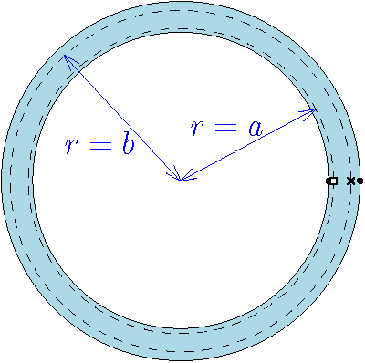
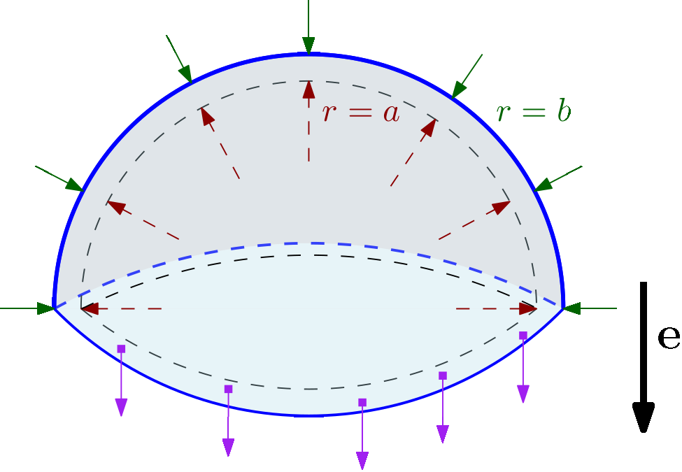
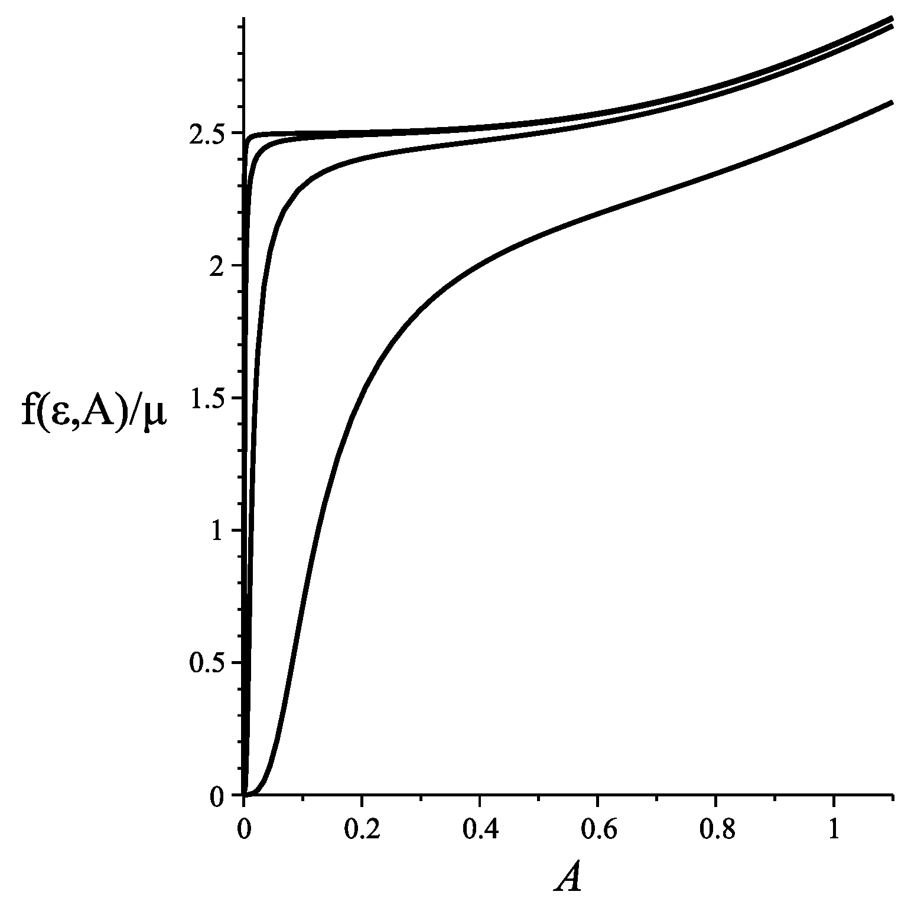
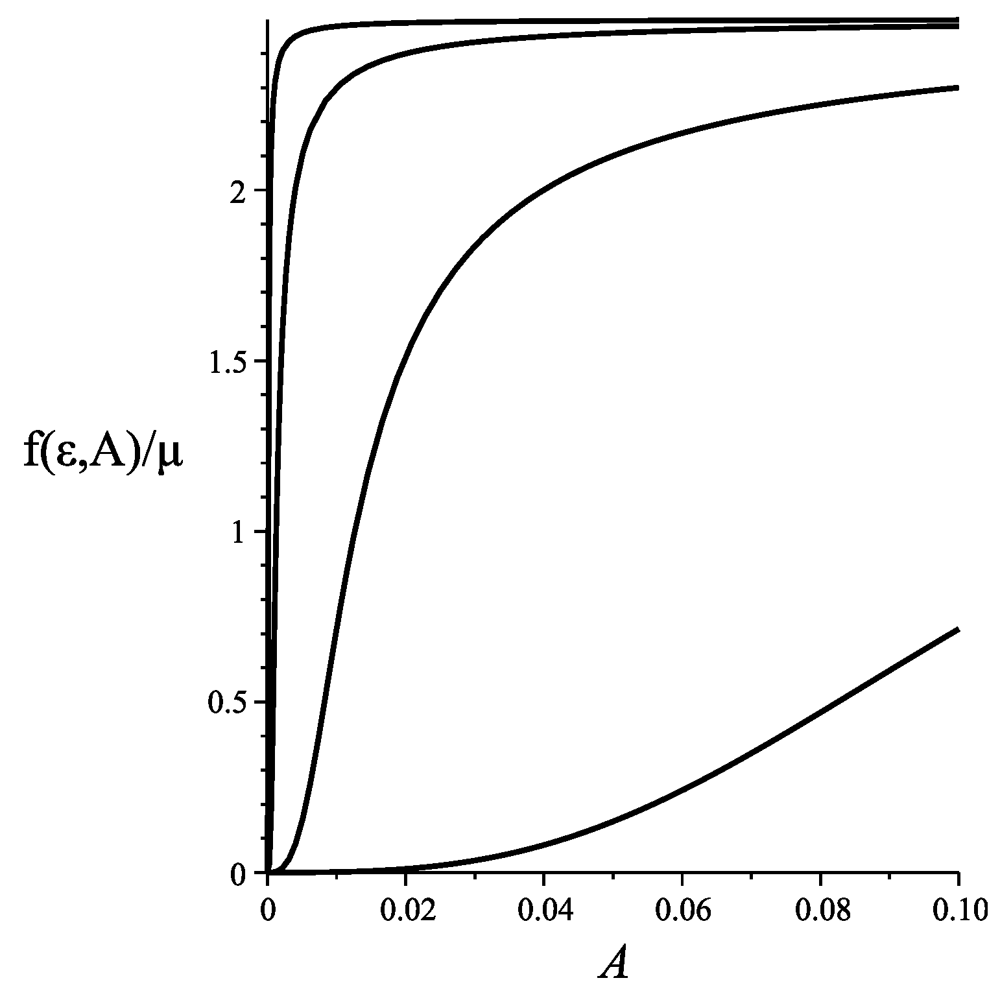

Lectures at the
Variational and PDE Methods in Nonlinear Science
CIME School, 10-14 July 2023
The existence theory in nonlinear elasticity, beginning with the pioneering work of John Ball in the seventies, constitutes one of the major achievements in the nonconvex calculus of variations. A central role is played by the Jacobian determinant, a highly nonlinear function of the gradient that has, nonetheless, a distinct divergence structure that encodes the remarkable fusion between topology, differential geometry, and mechanics that governs the response of an elastic body and that makes it possible to succeed in the analysis, sharing with homogenization theory the use of compensated compactness. This fragile balance is severely confronted if deformations large enough to induce or propagate fracture are present. In this case, singular structures are formed, which paradoxically produce exceedingly large values of the energy density being minimized. A suitable geometric characterization of these structures, based on the theory of functions of bounded variation and on Federer-Fleming’s closure theorem for integral currents, is in order. The methods developed have implications for the analysis of magnetoelasticity and nematic elastomers, as well as a striking connection with harmonic map theory because of the dipoles emerging in the borderline neo-Hookean open problem.
The minicourse aims to illustrate the interplay between modelling and rigorous analysis in the variational problems of elasticity theory, with a focus on the obstacles to proving existence associated to singularities that emerge under large deformations. We begin by pointing out a few applications of the theory. (The list of references, provided as a guide into part of the literature, is by no means exhaustive.)
Since the seminal works by Ambrosio & Braides (L. Ambrosio and Braides 1995) and by Francfort & Marigo (G. A. Francfort and Marigo 1998), the theory of free-discontinuity problems (see, e.g., (L. Ambrosio, Fusco, and Pallara 2000; L. Ambrosio and De Giorgi 1988; De Giorgi, Carriero, and Leaci 1989; L. Ambrosio and Tortorelli 1990, 1992; L. Ambrosio 1994, 1995)) originally developed for the Mumford-Shah model (Mumford and Shah 1989) in image segmentation, has been applied to determine the path under which a crack will grow in an elastic body under quasistatic loading (see, e.g., (Bourdin, Francfort, and Marigo 2008; Marigo, Maurini, and Pham 2016; G. Francfort 2022; Dal Maso and Toader 2002; G. A. Francfort and Larsen 2003; Dal Maso, Francfort, and Toader 2005; Giacomini 2005; Babadjian 2006; Larsen, Ortiz, and Richardson 2009; Larsen, Ortner, and Süli 2010; Dal Maso and Lazzaroni. 2010; Dal Maso and Iurlano 2013; Focardi and Iurlano 2014; Baldelli et al. 2014; Babadjian and Henao 2016; De Lorenzis and Maurini 2021)). The approach followed is that proposed by Griffith (Griffith 1921), where the propagation of a crack can be studied as the result of the minimization of a total energy functional comprising both an elasic term and a fracture term, so that the energy required for the breaking of bonds is harvested from the elastic energy released by attaining a configuration with the larger freedom allowed by the growth of a crack.
The minimization is set up in the space \(SBV(\Omega; \mathbb{R}^{3\times 3})\) of special functions \(\boldsymbol{u}: \Omega \to \mathbb{R}^3\) of bounded variation, that is, functions in the Lebesgue space \(L^1(\Omega, \mathbb{R}^3)\) whose distributional derivative is completely determined by \[\begin{gathered} -\int_\Omega \boldsymbol{u}(\boldsymbol{x})\cdot (\mathop{\mathrm{Div}}\boldsymbol{G})(\boldsymbol{x}) \mathrm{d}\boldsymbol{x} =: \langle D\boldsymbol{u}, \boldsymbol{G} \rangle \\ = \int_\Omega \nabla \boldsymbol{u}(\boldsymbol{x})\cdot \boldsymbol{G} (\boldsymbol{x}) \mathrm{d}\boldsymbol{x} + \int_{J_{\boldsymbol{u}}} \big [ \boldsymbol{u}(\boldsymbol{x})\big ] \cdot \Big ( \big ( \boldsymbol{G}(\boldsymbol{x})\big ) \boldsymbol{\nu}(\boldsymbol{x}) \Big ) \mathrm{d}\mathcal H^2(\boldsymbol{x}) \end{gathered}\] for all \(\boldsymbol{G} \in C^\infty_c(\Omega, \mathbb{R}^{3\times 3})\), or \[\begin{aligned} D\boldsymbol{u} = \nabla \boldsymbol{u}\, \mathcal L^3 + \big ( [\boldsymbol{u}]\otimes \boldsymbol{\nu}\big )\,\mathcal H^2\mathrel{\hbox{\rule[0.5ex]{0.5pt}{7pt}\rule{6pt}{0.5pt}}}_{J_{\boldsymbol{u}}}. \end{aligned}\] Here the open and bounded domain \(\Omega\subset \mathbb{R}^3\) represents the volume occupied by the body in its reference configuration, and \(\boldsymbol{u}:\Omega \to\mathbb{R}^3\) is the deformation map, so that \(\boldsymbol{u}(\boldsymbol{x})\) is the position, after the deformation, of the material point located at the position \(\boldsymbol{x}\) in the reference configuration. The expression \(\nabla \boldsymbol{u}(\boldsymbol{x})\) stands for the approximate gradient of \(\boldsymbol{u}\) (in the sense of geometric measure theory) at a given point \(\boldsymbol{x}\in \Omega\); the symbol \(J_{\boldsymbol{u}}\) represents the set of jump points \(\boldsymbol{x}\) of \(\boldsymbol{u}\), where two lateral traces \(\boldsymbol{u}^+(\boldsymbol{x})\) and \(\boldsymbol{u}^-(\boldsymbol{x})\) with respect to a well-defined Borel orientation \(\boldsymbol{\nu }: J_{\boldsymbol{u}} \to \mathbb{S}^2\) exist but differ from each other; \(\big [\boldsymbol{u}(\boldsymbol{x})\big ]\) denotes the jump \(\boldsymbol{u}^+(\boldsymbol{x}) - \boldsymbol{u}^-(\boldsymbol{x})\) at the point \(\boldsymbol{x}\in J_{\boldsymbol{u}}\); the Lebesgue measure is denoted by \(\mathcal L^3\); and \(\mathcal H^2\mathrel{\hbox{\rule[0.5ex]{0.5pt}{7pt}\rule{6pt}{0.5pt}}}J_{\boldsymbol{u}}\) is the two-dimensional Hausdorff measure restricted to the \(2\)-rectifiable set \(J_{\boldsymbol{u}}\). (See, e.g., (Gurtin 1981) for the definition of the divergence \(\mathop{\mathrm{Div}}\boldsymbol{G}\) of a tensor-valued test function \(\boldsymbol{G}:\Omega\to \mathbb{R}^{3\times 3}\) or the tensor product \(\boldsymbol{a} \otimes \boldsymbol{b}\) of two vectors in \(\mathbb{R}^3\).)
The elastic term in the energy functional to be minimized is \[\begin{equation} \label{eq:storedEnergy1} I_{\text{elastic}}[\boldsymbol{u}]:= \int_\Omega W\big (\boldsymbol{x}, \nabla \boldsymbol{u}(\boldsymbol{x})\big ) \mathrm{d}\boldsymbol{x}, \end{equation}\] where the stored-energy density \(W\) is assumed to be polyconvex (Ball 1977; Ciarlet 1988; Dacorogna 2008), i.e., of the form \[\begin{equation} \label{eq:storedEnergy2} W(\boldsymbol{x}, \boldsymbol{F})= \Phi\big (\boldsymbol{x}, (\boldsymbol{F}, \mathop{\mathrm{cof}}\boldsymbol{F}, \det \boldsymbol{F})\big ) \ \text{for some} \ \Phi: \Omega\times (\mathbb{R}^{3\times 3}\times \mathbb{R}^{3\times 3}\times (0,\infty)\big )\to [0,\infty] \end{equation}\] such that \(\Phi(\boldsymbol{x}, \cdot)\) is convex for almost every \(\boldsymbol{x}\in \Omega\). Here \(\mathop{\mathrm{cof}}\boldsymbol{F}\) denotes the matrix of cofactors of the deformation gradient \(\boldsymbol{F}\). Paradigmatic examples include the neo-Hookean \[\begin{equation} \label{eq:storedEnergy3} W(\boldsymbol{F}) = \frac{\mu}{2} ( |\boldsymbol{F}|^2 -3) -\mu\ln \det\boldsymbol{F} + \frac{\lambda}{2}(\det \boldsymbol{F} -1)^2 \end{equation}\] and the Mooney-Rivlin \[\begin{equation} \label{eq:storedEnergy4} W(\boldsymbol{F}) = C_{10}(\bar{I}_1-3) + C_{01}(\bar{I}_2-3) + \frac{1}{D_1}(J-1)^2 \end{equation}\] models, with \[\begin{aligned} \bar I_1 = J^{-2/3} |\boldsymbol{F}|^2, \quad \bar I_2 = J^{-4/3} |\mathop{\mathrm{cof}}\boldsymbol{F}|^2, \quad J=\det \boldsymbol{F}, \end{aligned}\] \(|\boldsymbol{F}|\) denoting the Frobenius norm \(|\boldsymbol{F}|=\sqrt{\mathop{\mathrm{tr}}\boldsymbol{F}^T\boldsymbol{F}}\). The coefficients \(\mu, \lambda, C_{10}, C_{01}, D_1>0\) can also depend on \(\boldsymbol{x}\), for example if the body is made up of different materials.
In the simplest formulation of the variational fracture problem, the fracture energy is assumed to be proportional to the number of bonds broken, which in turn is assumed to be proportional to the area, in the reference configuration, of the crack created. In other words, \[I_{\text{fracture}}[\boldsymbol{u}]:= \kappa \mathcal H^2(J_{\boldsymbol{u}}),\] where \(\kappa>0\), with units of energy per unit area, is the fracture toughness of the material. Assuming a quasistatic loading, and after a suitable time-discretization, the incremental update problem consists in minimizing \(I_{\text{elast}}[\boldsymbol{u}] + I_{\text{fracture}}[\boldsymbol{u}]\) among a subclass of \(SBV\) that takes into account the imposed traction and displacement boundary conditions as well as the irreversibility constraint that the codimension-one set of all cracks in the body (which contains the set \(J_{\boldsymbol{u}}\) of jump discontinuities of the deformation map \(\boldsymbol{u}\)) must be larger (at least up to an \({\mathcal H}^2\)-null set) at each time step.
When deformations are assumed to be small, the problem studied is often that of linearized elasticity (Ciarlet 1988; Landau and Lifshitz 1986; Marsden and Hughes 1994), where the stored-energy function is approximated by \[\begin{aligned} W(\boldsymbol{x}, \nabla \boldsymbol{u}(\boldsymbol{x})) \approx \frac{1}{2} \boldsymbol{\varepsilon}(\boldsymbol{x}) : \mathbb{C}\boldsymbol{\varepsilon}(\boldsymbol{x}), \qquad \mathbb{C} = \frac{\partial^2 W}{\partial \boldsymbol{F}^2}\Bigg |_{\boldsymbol{F}=\boldsymbol{I}}, \qquad \boldsymbol{\varepsilon}(\boldsymbol{x})= \frac{\nabla \boldsymbol{u}(\boldsymbol{x}) + \big (\nabla \boldsymbol{u}(\boldsymbol{x})\big )^T}{2}, \end{aligned}\] \(\boldsymbol{u}:\Omega \to \mathbb{R}^3\) denoting now the infinitesimal displacement field (instead of the deformation map) and \(\boldsymbol{I}\) being the \(3\times 3\) identity matrix. For an isotropic material (such as the neo-Hookean or the Mooney-Rivlin materials) the constitutive relation takes the form \[\begin{aligned} \mathbb{C}\boldsymbol{\varepsilon}= 2\mu\,\boldsymbol{\varepsilon}+ \lambda (\mathop{\mathrm{tr}}\boldsymbol{\varepsilon}) \boldsymbol{I}, \end{aligned}\] where \(\mu\) and \(\lambda\) are known as the Lamé parameters. The \(SBV\) space is then replaced by \(SBD\), the space of functions with bounded deformations (Bellettini, Coscia, and Dal Maso 1998), where only the symmetric part \(\{E_{ij}u\}\) of the distributional derivative, with \(E_{ij}u= (D_iu^j + D_j u^i)/2\), is required to be a Radon measure.
Remarkable examples of the ability of the model to capture propagation in heterogeneous media, interaction between propagating or pre-existing cracks, or the morphogenesis of complex crack systems during thermal shocks can be found, e.g. in the research websites of Blaise Bourdin (Bourdin, n.d.) and Corrado Maurini (Maurini, n.d.) (and references therein). Here the focus will be on the ability of the free-discontinuity models in nonlinear elasticity to study the internal rupture of polymers and ductile metals under triaxial tension, through the formation of microvoids, their sudden expansion, and their subsequent coalescence. In the case of polymers, the analysis of this phenomemon of cavitation has been inspired by the seminal experimental and theoretical work of Gent & Lindley (Gent and Lindley 1959) (inspired, in turn, by experiments of Yerzley (Yerzley 1939) on adhesion of neoprene) on short rubber cylinders bonded to parallel steel plates which are then pulled apart. Because of the resistance of the rubber to volume changes, the confining plates exert tangential reaction forces in order to prevent the rubber from contracting in these directions as a result of the normal extension, changing the stress from uniaxial to triaxial tension in the interior of the sample. At a critical load the internal rupture is marked by an audible popping and a discontinuity in the stress-strain curve, and when the experiment is conducted in transparent elastomers very large cavities can be observed originating from flaws that shrink back to a much smaller length scale upon unloading (Azoug et al. 2014; Toulemonde et al. 2017; Poulain et al. 2017; Poulain, Lopez-Pamies, and Ravi-Chandar 2018). In (Ball 1982) Ball showed that when an elastic body is subject to a radially symmetric dead-load traction (an idealized boundary value problem that resembles the state of hydrostatic tension and mechanical response at intermediate length scales within a confined elastomer), a stable branch of weak solutions to the equilibrium equations, in which a spherical cavity (of increasing radius) forms at the centre, bifurcates, at the critial load predicted by Gent & Lindley, from the radially-symmetric solution with no cavitation discontinuities, which in turn becomes unstable at the critical load. The literature on the analysis of cavitation in the radially symmetric case is abundant, see, e.g., (Sivaloganathan 1986; Gent 1991; Horgan and Polignone 1995; Negrón-Marrero and Sivaloganathan 2024). In the case of uniaxial traction of a ductile bar, a similar situation occurs after yielding and developing plastic bands, which deform without changing volume via plastic slip. These bands end up being confined by the healthy part of the material, which exerts the reaction force in the transverse direction leading to triaxial tension and void growth and coalescence (see, e.g., (Petrinic et al. 2006)).
In joint work with Mora-Corral and Xu (Henao, Mora-Corral, and Xu 2016; Xu and Henao 2011) it was shown (see Fig. 1) that it is possible to observe the cavitation singularities (and the nucleation of cracks through their coalescence) using a variant of the vectorial Ambrosio-Tortorelli (L. Ambrosio and Tortorelli 1990, 1992) phase-field regularization applied by Bourdin, Francfort & Marigo (Bourdin, Francfort, and Marigo 2008, 2000) for the simulations on brittle fracture. In this regularization jump discontinuities are replaced with a gradual interpolation of the lateral traces \(\boldsymbol{u}^-\) and \(\boldsymbol{u}^+\) that takes place on a neighbourhood of order \(\varepsilon\) of the jump set \(J_{\boldsymbol{u}}\), where \(\varepsilon\) is a small parameter introduced in the numerical model. This makes it easier to find a minimizer among well-known finite element spaces, and the approximation improves as \(\varepsilon\) becomes smaller (at the cost of requiring a finer mesh so that the \(O(\varepsilon)\)-wide transition region contains enough elements to resolve the jump discontinuity). A damage phase field \(\alpha(\boldsymbol{x})\) is added to the model indicating where the body remains healthy (\(\alpha=0\)) and where it has broken (\(\alpha=1\)).
For linearized elasticity the proof that the vectorial Ambrosio-Tortorelli functional \[\begin{aligned} \int_\Omega \big ((1-\alpha(\boldsymbol{x}))^2 + o(\varepsilon)\big ) W\big (\nabla \boldsymbol{u}(\boldsymbol{x})\big ) + \kappa \int_\Omega \varepsilon|\nabla \alpha|^2 + \frac{\alpha^2(\boldsymbol{x})}{4\varepsilon} \mathrm{d}\boldsymbol{x} \end{aligned}\] \(\Gamma\)-converges in \(L^2(\Omega; \mathbb{R}^3)\times L^2(\Omega)\) as \(\varepsilon\to 0\) (the theory of \(\Gamma\)-convergence is presented, e.g., in (Dal Maso 1993; Braides 2002)) to \[\begin{aligned} I[\boldsymbol{u}, \alpha] = \begin{cases} \int_\Omega W(\nabla \boldsymbol{u}(\boldsymbol{x})) \mathrm{d}x + \kappa \mathcal H^2(J_{\boldsymbol{u}}), & \text{if } \boldsymbol{u} \in SBD(\Omega),\ \alpha=0,\ \text{and}\ \|\boldsymbol{u}\|_{L^\infty}\leq M, \\ +\infty, & \text{otherwise} \end{cases} \end{aligned}\] (i.e., to the linear Francfort & Marigo functional), is due to Chambolle (Chambolle 2004, 2005). The \(\Gamma-\liminf\) inequality for the convergence as \(\varepsilon\to 0\) in the polyconvex nonlinear case, with elastic energies mildly coercive at infinity so that cavitation is allowed, to the SBV version (analyzed with Mora-Corral (Henao and Mora-Corral 2010, 2011)) of the models by Müller & Spector (Müller and Spector 1995) and Sivaloganathan and Spector (Sivaloganathan and Spector 2000), was obtained in (Henao, Mora-Corral, and Xu 2015). Recovery sequences for generic examples of void coalescence were also presented. The proof of the weak continuity of the \(2\times 2\) minors is due to (Fusco et al. 2006); the passage to the weak continuity for the full Jacobian without stronger coercivity assumptions is based on the proof of Federer-Fleming’s closure theorem for integral currents (Federer 1969), as shall be explained in Section 3. Simulations reproducing, from the phase-field model for fracture in nonlinear elastiticy, various experimental observations of cavitation, have recently been performed by Kumar, Francfort, and Lopez-Pamies (Kumar, Francfort, and Lopez-Pamies 2018; Kumar and Lopez-Pamies 2021) with impressive accuracy (see Figure 2).
The formation of fibrils after the opening and sudden expansion of voids is also observed within hydrogels in peeling experiments for the measurement of their bonding toughness to various substrates. This can be seen, e.g., in (Yuk et al. 2016, fig. 2). In that work the toughness was measured also for swollen hydrogels immersed in water, giving a value of \(\kappa\approx 1100\ \text{J\,m}^{-2}\) for a polyacrylamide sample bonded on glass after 24 h of immersion.
One of the concerns in the design of the synthetic polymers for the coating of pacemakers and other medical prostheses is to manufacture them sufficiently thin so as to prevent their debonding from the metallic parts of the prostheses. In order to choose between various prototypes of synthetic polymers, it is potentially valuable to have an explicit estimate of a critical thickness above which a hydrogel film becomes more unstable against debonding. In a series of works, in collaboration with Calderer, Garavito, Lyu, Tapia, Sánchez, Siegel, and Song (Calderer et al. 2020, 2023, 2024; Song et al. 2023), the following asymptotic formula was formally derived, and validated numerically and experimentally: \[\begin{aligned} d_{\max} := \kappa \Bigg / \left ( \frac{G}{2} (2+\lambda_{\text{uni}}^2) + \frac{k_BT}{V_m} H(\lambda_{\text{uni}}) - \frac{G}{2}(2({\lambda^*}^2+1) - \frac{k_B T}{V_m} H({\lambda^*}^2)) \right ). \end{aligned}\] It estimates the threshold thickness for debonding in the case of a rectangular gel bonded to a glass substrate and placed between parallel walls without friction, which gives a simplified two-dimensional swelling. Here \(G\) denotes the shear modulus of the hydrogel in synthesis (before it is immersed in water); \(k_B\) is Boltzmann’s constant; \(T\) is the temperature; \(V_m\) is the molecular volume of water; \(H:(\phi_0, \infty)\to \mathbb{R}\) is the function \[\begin{aligned} H(J):= (J-\phi_0)\ln (1-\phi) + \chi \phi_0(1-\phi),\quad \phi=\phi_0/J, \end{aligned}\] \(\phi_0\) being the polymer volume fraction in synthesis; and \(\lambda_{\text{uni}}\) and \(\lambda^*\) are the solutions of \[\begin{aligned} \gamma + H'({\lambda^*}^2)=0,\quad \gamma \lambda_{\text{uni}} + H'(\lambda_{\text{uni}})=0, \quad \gamma = \frac{G}{k_BT/V_m}. \end{aligned}\] When exposed to solvent, the hydrogel maximizes its entropic gain swelling by an equal factor in all directions, whereas the bonded substrate confines its swelling to occur primarily along the normal direction. Following Doi (Doi 2013, Eq. 2.62) (see also (Rubinstein, Colby, et al. 2003, 23:143), (Hong et al. 2008; Kang and Huang 2010)) the entropic energy of different swelling modes is estimated with the Flory-Huggins statistical mechanics model (Flory 1941; Huggins 1941), the function \(H(J)\) being the free energy per unit reference volume, with \(J=\det \nabla \boldsymbol{u}(\boldsymbol{x})\) being the Jacobian determinant of the deformation of the polymer network and \(\chi\) a chemical parameter for the interaction between the polymer and the solvent. Adding the elastic energy due to the distortion of the polymer network during swelling results in the energy density \[\begin{aligned} \frac{G}{2}(|\boldsymbol{F}|^2-3) - G\ln\det \boldsymbol{F} + H(\det \boldsymbol{F}), \quad \boldsymbol{F}=\nabla \boldsymbol{u}(\boldsymbol{x}), \end{aligned}\] which is polyconvex in \(\boldsymbol{F}\) (with no longer a stress-free reference configuration).
The FitzHugh-Nagumo nonlinear reaction-diffusion equations \[\begin{aligned} \frac{\partial \phi}{\partial t} - D\Delta \phi &= c_1\phi(\phi-\alpha)(1-\phi) + c_2r \\ \frac{\partial r}{\partial t} &= b(\phi - dr) \end{aligned}\] for the propagation of the electric impulse in the heart (FitzHugh 1961; Nagumo, Arimoto, and Yoshizawa 1962; Fenton and Cherry 2008) exhibit a variational structure that makes it possible to develop robust numerical schemes and to prove special convergence estimates (e.g. (Nochetto, Savaré, and Verdi 2000; Sanfelici 2002; Colli Franzone and Savaré 2002; Franzone and Pavarino. 2004; Pennachio, Savaré, and Franzone 2006; Hurtado and Henao 2014; Cornejo 2015; Oyarzún 2023)). However, it is necessary (and an active field of research) to better understand the coupling between the electric activity and the elasticity of the cardiac muscles, in a framework amenable to the study of well-posedness, numerical analysis and physiological modelling. In this endeavour, as in related problems in biomechanics (see, e.g., (Holzapfel and Ogden 2006, 2017)), the current knowledge of nonlinear elasticity theory is most relevant. An important step forward has recently been achieved in (Propp et al. 2020).
Nematic elastomers are materials that exhibit a fascinating coupling between the orientational order of liquid crystals and the high extensibility of elastomers, a possibility first discussed by de Gennes in 1969. The predicted ability to undergo large reversible deformations upon heating was confirmed by Küpfer & Finkelmann (Küpfer and Finkelmann 1991) in 1991, who developed large perfect monodomain nematic elastomers exhibiting thermomechanical strains of \(\sim 300 \%\). In the comprehensive monograph by Warner & Terentjev (Warner and Terentjev 2003), the following features of nematic elastomers are explained: shape change without energy cost; extreme rotatory-mechanical coupling; UV-light induced shape changes; and other unexpected properties, as well as their potential as materials for chemical, mechanical, and biomedical sensing; micro and nano actuation; artificial muscles; mirrorless tuneable lasers; and soft ferroelectrics, among others. The nonlinear model in (Warner, Bladon, and Terentjev 1994) produces, for uniaxial stretching, a stress-strain curve with a plateau where many different stretches can be obtained at zero internal stress by means of forming bands with alternating shears. It is remarkable how this can be understood in terms of the quasi-convexification of the corresponding energy functional (see (Golubović and Lubensky 1989; DeSimone and Dolzmann 2000, 2002; Conti, DeSimone, and Dolzmann 2002; Warner and Terentjev 2003; Martinoty et al. 2004; Ye et al. 2007; Biggins, Terentjev, and Warner 2008; DeSimone and Teresi 2009; Agostiniani and DeSimone 2011, 2020; Agostiniani, DeSimone, and Koumatos 2017) and references therein), bearing a strong resemblance to twinning in martensite and other shape-memory alloys (Ball and James 1987; Bhattacharya 2003). Section 4 presents in detail a part of the proof of existence of minimizers for the geometrically nonlinear models of nematic elastomers (Barchiesi and DeSimone 2015; Calderer, Garzón, and Yan 2015; Barchiesi, Henao, and Mora-Corral 2017; Henao and Stroffolini 2020; Scilla and Stroffolini 2020), where the Frank energy term is written in the deformed configuration. This is desirable from the physical viewpoint since the deformations involved in the spontaneous deformation of nematic elastomers are considerably large, hence the approximation in which the spatial variations (in the deformed configuration) of the nematic director \(\boldsymbol{n}\) are penalized with its Dirichlet integral in the reference configuration induces to some errors in the computation. However, proving existence for these geometrically nonlinear models is challenging from the mathematical viewpoint since the necessary regularity results for the inverse map of the elastic deformation, in order to push-forward the term in the deformed configuration and expolit the compactness and lower semicontinuity properties when working with a fixed domain, are in general unavailable using only the natural energy bounds.
This section aims to give a flavour of the interaction between mathematics and mechanics in nonlinear elasticity by studying the solution to the elastostatic equation in the particular case of the expansion of a spherical shell in hydrostatic tension, assuming incompressibility (Green and Zerna 1992). In this case the equations are sufficiently tractable so as to yield a explicit solution, yet they provide a rich mechanical insight of how traction is trasmitted from the boundary towards the interior so as to reach a new equilibrium state. The obtained closed form traction-expansion relation also constitutes the starting point for the analyses by Gent & Lindley (Gent and Lindley 1959) and by Ball (Ball 1982), mentioned in the Introduction, of the phenomenon of cavitation, that is, the internal rupture of rubber under triaxial tension through the formation of microvoids and their sudden expansion.
The notation and the presentation of the concepts of continuum mechanics are based on the book by Gurtin (Gurtin 1981).
Consider a shell made of a hyperelastic material and occupying the region \[\Omega:=\{\boldsymbol{x} = R\,\boldsymbol{\theta }: \ R_1<R<R_2,\ \boldsymbol{\theta }\in \mathbb{S}^2\}\] in its reference configuration. Consider a radially symmetric deformation \(\boldsymbol{u}(\boldsymbol{x})= r(R)\boldsymbol{\theta}\) with \(r:(R_1,R_2)\to (0,\infty)\) increasing, \(r(R_1)=:r_1\) and \(r(R_2)=:r_2\). Assume that the material is incompressible, so that the volume of every part of the shell is retained after deformation. In particular, for every \(R_1<\bar R < R_2\) \[4\pi r(R)^3 - 4\pi r_1^3 = |\boldsymbol{u}(\{R_1<|\boldsymbol{x}|<\bar R\})| = |\{R_1<|\boldsymbol{x}| < \bar R\}| = 4\pi {\bar R}^3 - 4\pi R_1^3,\] hence \[\begin{equation} \label{eq:cavitation_solution} r(R) = \sqrt[3]{A^3 + R^3}, \quad A^3 = r_1^3 - R_1^3, \quad v(R):=\frac{r(R)}{R} = \sqrt[3]{1 + \frac{A^3}{R^3}}. \end{equation}\] Note that the tangential stretch \(v(R)\) is decreasing and satisfies \(v(R)>1\). As for the radial stretch, \[\frac{\mathrm{d}r}{\mathrm{d}R} = r'(R), \qquad 3r^2r'(R) = \frac{\mathrm{d}}{\mathrm{d}R} (r^3) = 3R^2, \qquad r'(R) = (v(R))^{-2}.\] Since \(0<r'(R) <1\), it is a contraction along that direction. Denoting the tensor product of \(\boldsymbol{a}, \boldsymbol{b} \in \mathbb{R}^3\) by \(\boldsymbol{a} \otimes \boldsymbol{b}\), we obtain that \[\begin{aligned} D{\boldsymbol{u}} &= r'\boldsymbol{\theta }\otimes \nabla R + r D\boldsymbol{\theta} = r'(R) \boldsymbol{\theta }\otimes \boldsymbol{\theta }+ \frac{r(R)}{R} (\boldsymbol{I} - \boldsymbol{\theta }\otimes \boldsymbol{\theta}) \end{aligned}\] where \(\boldsymbol{I}\) denotes the \(3\times 3\) identity matrix. In an orthonormal basis with \(\boldsymbol{\theta}\) as first vector, \[D\boldsymbol{u} = \left ( \begin{array}{ccc} r'(R) &&\\ &r/R & \\ && r/R \end{array}\right ) = \mathop{\mathrm{diag}}(r'(R), v(R), v(R)).\] In particular, \(\det D\boldsymbol{u}=r'v^2\equiv 1\), so volumes are preserved.
 . . . . . 
For the body to be in equilibrium, given any portion of it, the forces acting on the boundary of this portion, in the deformed configuration, must cancel out (if we neglect gravity and other body forces). Given any \(r_1<a<b<r_2\), this must hold, in particular, for \(\{\boldsymbol{y}=(y_1,y_2,y_3): a<|\boldsymbol{y}| < b,\ y_3\geq 0 \}.\) In an isotropic material, and for radially symmetric deformations, the stress \(\boldsymbol{t} = \frac{\mathrm{d}\boldsymbol{F}}{\mathrm{d}A}\) is normal to the virtual surface across which it is being calculated. Denote by \[\boldsymbol{t}_1 = \sigma_1(r_0) \boldsymbol{\theta}_0, \qquad \boldsymbol{t}_2 = \sigma_2(r_0) \boldsymbol{e},\] the radial true stress across \(r=r_0\) and the hoop true stress across \(\boldsymbol{y}_0 + \boldsymbol{e}^\perp\), respectively, both at \(\boldsymbol{y}_0 = \boldsymbol{u}(\boldsymbol{x}_0) = r(R_0) \boldsymbol{\theta}_0\), for a virtual cut across the equator, \(\boldsymbol{e}=-\boldsymbol{e}_3 = (0,0,-1)\) being the unit normal pointing downwards. Note that \(\sigma_2>0\) (see Figure 3). Therefore \[\begin{gathered} \int_{\substack{|\boldsymbol{y}|=b\\ y_3\geq 0}} \sigma_1(b)\boldsymbol{\theta}\,\mathrm{d}A + \int_{\substack{|\boldsymbol{y}|=a\\ y_3\geq 0}} (-\sigma_1(a))\boldsymbol{\theta}\,\mathrm{d}A + \int_{\substack{a<|\boldsymbol{y}|<b\\ y_3=0}} \sigma_2(r) (-\boldsymbol{e}_3)\,\mathrm{d}A =\boldsymbol{0}, \end{gathered}\] which yields the elastic equilibrium equation, showing how the stresses are coupled: \[\begin{aligned} \pi b^2 \sigma_1(b) - \pi a^2\sigma_1(a)= 2\pi \int_{r=a}^b r\sigma_2(r)\mathrm{d}r \quad \text{hence}\quad \frac{\mathrm{d}}{\mathrm{d}r} \big ( r^2 \sigma_1(r) \big ) = 2r\sigma_2(r). \end{aligned}\] In this geometry, it corresponds to the conservation of linear momentum equation.
It is convenient to rewrite the equation taking the radial stretch \(v=\frac{r}{R}\) as the independent variable (which can be done since the relation between \(R\) and \(v\) is bijective, as well as the one between \(v\) and \(r\)): \[2r\sigma_1 - \frac{A^3r^2}{R^4} \frac{\mathrm{d}\sigma_1}{\mathrm{d}v} = 2r\sigma_2.\]
The constitutive equations for an incompressible isotropic hyperelastic material are \[\begin{aligned} \sigma_i(\boldsymbol{y}) &= v_i(\boldsymbol{x}) \frac{\partial \phi}{\partial v_i}\big (v_1(\boldsymbol{x}), v_2(\boldsymbol{x}), v_3(\boldsymbol{x})\big ) - p(\boldsymbol{x}), \qquad i=1,2,3 \end{aligned}\] for some stored energy density \(\phi: (0,\infty)^3 \to \mathbb{R}\) and a Lagrange multiplier \(p(\boldsymbol{x})\), where \(v_1\), \(v_2\), \(v_3\) are the principal stretches. As seen above, for radially symmetric deformations these are \(v_1:=r'(R)\), \(v_2:=r(R)/R\), \(v_3:=r(R)/R\). Subtracting the radial constitutive equation from the tangential one, we obtain \[\begin{aligned} -A^3r^2R^{-4} \frac{\mathrm{d}\sigma_1}{\mathrm{d}v} & = 2r\sigma_2-2r\sigma_1 =rv \Bigg ( 2\frac{\partial \phi}{\partial v_2}\big ( v^{-2}, v, v\big ) - 2v^{-3} \frac{\partial \phi}{\partial v_2}\big ( v^{-2}, v, v\big ) \Bigg ). \end{aligned}\] Defining \(\hat \phi(v) := \phi\big (v^{-2}, v, v\big )\), it follows that \[\frac{\mathrm{d}\sigma_1}{\mathrm{d}v} = -\frac{1}{v^3-1} \frac{\mathrm{d}\hat \phi}{\mathrm{d}v} \quad \text{hence}\quad \sigma_1(r_2)-\sigma_1(r_1) = \int_{v(R_2)}^{v(R_1)}\frac{1}{v^3-1} \frac{\mathrm{d}\hat \phi}{\mathrm{d}v}.\] The left-hand side is the pressure difference between the interior and the exterior. The integrand at the right-hand side is a known function. This equation determines the parameter \(A\) (hence the deformation) as a function of the pressure difference.
As an example, for incompressible neo-Hookean materials \[\begin{gathered} \phi(v) := \frac{\mu}{2} (v_1^2 +v_2^2 + v_3^2 - 3), \qquad \frac{1}{v^3-1}\frac{\mathrm{d}\hat \phi(v)}{\mathrm{d}v} = 2\mu (v^{-2} + v^{-5}) \\ \text{hence} \qquad \sigma_1(r_2)-\sigma_1(r_1) =\mu \left [2v^{-1} + \frac{v^{-4}}{2} \right ]_{v=v(R_1)}^{v(R_2)} \\ \text{and so} \quad \frac{p_1-p_2}{\mu} = 2 \Big ( 1 + \frac{A^3}{R_2^3}\Big )^{-1/3} + \frac{1}{2}\Big ( 1 + \frac{{A}^3}{R_2^3}\Big )^{-4/3} - 2\Big ( 1 + \frac{A^3}{R_1^3}\Big )^{-1/3} -\frac{1}{2} \Big ( 1 + \frac{{A}^3}{R_2^3}\Big )^{-4/3}, \end{gathered}\] where \(p_1:=-\sigma_1(r_1)\) and \(p_2:=- \sigma_1(r_2)\) are the inner and outer pressures. Note that necessarily \(p_2 < p_1\) in this case where the shell is in tension, since the inner stretch \(v(R_1)\) is larger than the outher stretch \(v(R_2)\).
 
Cavitation: consider now the case of an elastic ball containing a traction-free microscopic cavity at its centre: \(R_1=\varepsilon>0\), \(R_2=1\), \(p_1=0\). Suppose that at the outer boundary \(R=1\) it is subject to normal traction. Denote by \(F\) the total force exerted upon the boundary and by \(P\) the force per unit area in the reference configuration: \(P = F/(4\pi)\). The radial stress in the deformed configuration is given by \[-p_2=\sigma_1(R_2)=\frac{F}{4\pi r(R_2)^2} = \frac{F}{4\pi R_2^2}\Bigg ( \frac{r(R_2)}{R_2}\Bigg )^{-2} = P \big ( v(R_2) \big )^{-2}.\] Substituting in the obtained solution yields that \(P=f(\varepsilon, A)\), where \[\begin{gathered} f(\varepsilon, A):= \mu (1+A^3)^{2/3} \Bigg [ 2\Big ( (1+A^3)^{-1/3} - (1+A^3\varepsilon^{-3})^{-1/3} \Big ) \\ + \frac{1}{2}\Big ( (1+A^3)^{-4/3} - (1+A^3\varepsilon^{-3})^{-4/3} \Big ) \Bigg ]. \end{gathered}\] (see Figure 4). If the parameter \(A=A(\varepsilon)\) remains positive in the \(\varepsilon\to 0\) limit then \[P=2\mu v + \frac{\mu}{2}v^{-2},\quad v^3=1+A^3, \quad A=A(0).\] Being it an increasing function of \(v\) and this quantity, in turn, increasing in \(A\), \(P>5\frac{\mu}{2}\) appears as a necessary condition for the sudden expansion of a cavity. The prediction that for thin geometries the internal rupture occurs close to \(P=\frac{5\mu}{2}\) has been confirmed by Gent & Lindley and many experiments since then (Gent 1991).
For kinematics more general than that of radially symmetric deformations of an elastic ball, it is more appropriate to study the elastostatics equations in terms of the minimization of the elastic energy functional \[\begin{equation} \label{eq:functionalI} I[\boldsymbol{u}]:= \int_\Omega W(\nabla \boldsymbol{u}(\boldsymbol{x}))\mathrm{d}\boldsymbol{x} \end{equation}\] in a suitable space \(\mathcal A\) of admissible deformations \(\boldsymbol{u}:\Omega \subset \mathbb{R}^3\to\mathbb{R}^3\), where \(W(\boldsymbol{F})\) is the stored-energy function (see Eqs. [eq:storedEnergy1]–[eq:storedEnergy4]). However, many challenges remained in the problem of proving the existence of minimizers for the neo-Hookean model [eq:storedEnergy3]. The current proofs still require growth conditions of the form \[\begin{equation} \label{eq:coercivity0} W(\boldsymbol{F})\geq C(|\boldsymbol{F}|^p + H(\det \boldsymbol{F}) - 1),\end{equation}\] or \[\begin{equation} \label{eq:coercivity1} W(\boldsymbol{F}) \geq C(|\boldsymbol{F}|^2 + A(|\mathop{\mathrm{cof}}\boldsymbol{F}|) + H(\det \boldsymbol{F}) -1 ), \end{equation}\] for some constant \(C>0\), with either:
\(p>2\) (Ball 1977; Giaquinta, Modica, and Souček 1989a; Müller 1988; Müller, Tang, and Yan 1994; Müller and Spector 1995; Sivaloganathan and Spector 2000) (see the classical monographs by Ciarlet (Ciarlet 1988) and Dacorogna (Dacorogna 2008));
\(p=2\) and \(A(\cdot)\) with superlinear growth at infinity (Mucci 2010a; Henao and Mora-Corral 2012; Doležalová, Hencl, and Molchanova 2024);
or \(p=2\) and \(H(J)\geq CJ^{-2}\) (Doležalová, Hencl, and Molchanova 2024, Thm. 5.5), (Kalayanamit 2024, Thm. 2.5)¨.
In the case \(p=2\) with no assumptions on \(H(J)\) other that the natural convexity, superlinearity for large Jacobians \(J\), and going to infinity as \(J\to 0^+\) (compatible, e.g., with the logarithmic term in [eq:storedEnergy3]) the only existing results are through the process known in the calculus of variations as relaxation (Dacorogna 2008; Malý 1993; Henao and Rodiac 2018; Barchiesi et al. 2023, 2024b, 2024a).
In order to work with the direct method of the calculus of variations (Dacorogna 2008; Struwe 2000) we need a topology sufficiently coarse so as to obtain compactness from the energy bounds alone, yet sufficiently fine so that the elastic energy functional is lower semicontinuous. Using the growth condition \(W(\boldsymbol{F})\geq C(|\boldsymbol{F}|^p -1)\) it is natural to work with a class \(\mathcal A\) of functions within the Sobolev space \(W^{1,p}(\Omega, \mathbb{R}^3)\) so that any minimizing sequence \(\big ( \boldsymbol{u}_j\big )_{j\in\mathbb{N}}\) automatically have convergent subsequences, in the \(W^{1,p}\)-weak topology by the Banach-Alaoglu Theorem (Reed and Simon 1981). Regading the lower semicontinuity \[I[\boldsymbol{u}]\leq \liminf_{j\to\infty} I[\boldsymbol{u}_j],\] using (Ball, Currie, and Olver 1981, Thm. 5.4) (which extends the Tonelli-Serrin Theorem) and the polyconvexity assumption, the problem reduces to showing that the \(L^1\)-weak\(^{*}\) limit of (a subsequence of) \(\big (\det \nabla \boldsymbol{u}_j\big)_{j\in\mathbb{N}}\), which exists thanks to the superlinearity of the function \(H(J)\) in the growth condition for \(W(\boldsymbol{F})\) and by the Dunford-Pettis and De la Vallée Poussin Theorems, is in fact the Jacobian determinant of the \(W^{1,p}\)-weak limit \(\boldsymbol{u}\). However, as pointed out by Ball & Murat (Ball and Murat 1984), whenever \(p<3\) (case in which the cavitation solution [eq:cavitation_solution] has less energy than the homogeneous deformation satisfying the same boundary condition, as shown in (Ball 1982), so that \(W^{1,p}\)-quasiconvexity fails) the elastic energy \(I[\boldsymbol{u}]\) is not sequentially \(W^{1,p}\) weakly lower semicontinuous (a counterexample is built by rescaling the cavitation map and reproducing it periodically, via a Vitali covering, generating a sequence that converges weakly to the homogenized affine deformation with the same boundary data, hence a larger instead of a smaller energy is obtained in the weak limit).
One solution is the one found by Reshetnyak (Reshetnyak 1967) and Ball (Ball 1977) of requiring either \(p>3\), or an \(\mathcal A_{p,q}\) condition of the form \[p\geq 2,\quad q > \frac{p}{p-1},\] and using the special divergence structure of the Jacobian determinant, a strategy that has a strong connection with compensated compactness in homogenization theory. By combining this structure with the isoperimetric inequality and the Hardy-BMO duality, Müller (Müller 1990) proved the existence result in the borderline case \(p=3\) and Müller, Tang & Yan (Müller, Tang, and Yan 1994) relaxed the \(\mathcal A_{p,q}\) condition to \(p\geq 2\), \(q\geq \frac{3}{2}\). A second solution, found by Giaquinta, Modica & Souček (Giaquinta, Modica, and Souček 1989a) is to stick to requiring only \(p>2\), using compensated compactness for the weak continuity of the cofactors in \(L^{p/2}\), and assume furthermore that the graph \(\partial G_{\boldsymbol{u}}\) of \(\boldsymbol{u}\) has no boundary (in the sense of currents) for the passage from the continuity of \(2\times 2\) minors to that of \(3\times 3\) minors, profiting from Federer-Fleming’s closure theorem for integral currents. A more direct version of the proof was provided by Müller (Müller 1988), rewriting the \(\partial G_{\boldsymbol{u}}=0\) regularity assumption in terms of the divergence identities: \[\begin{equation} \label{eq:divergenceIdentities} \mathop{\mathrm{Div}}\Big ( (\mathop{\mathrm{adj}}\nabla \boldsymbol{u}) \boldsymbol{g}\circ \boldsymbol{u}\Big ) = (\operatorname{div}\boldsymbol{g})\Big (\boldsymbol{u}(\boldsymbol{x})\Big ) \det \nabla \boldsymbol{u}(\boldsymbol{x}) \quad \text{for all}\ \boldsymbol{g} \in C^\infty_c(\mathbb{R}^3) \end{equation}\] Taking, in particular, the test function \(\boldsymbol{g}(\boldsymbol{y})=\boldsymbol{y}/3\) yields the famous relation \[\begin{equation} \mathop{\mathrm{Det}}\nabla \boldsymbol{u} = \det \nabla \boldsymbol{u}, \end{equation}\] where \(\mathop{\mathrm{Det}}\nabla \boldsymbol{u}\) stands for the distributional Jacobian \[\begin{equation} \langle \mathop{\mathrm{Det}}\nabla \boldsymbol{u}, \varphi \rangle := -\frac{1}{3} \int_\Omega \boldsymbol{u}(\boldsymbol{x}) \cdot \big ( \mathop{\mathrm{cof}}\nabla \boldsymbol{u}(\boldsymbol{x})\big ) \nabla \varphi(\boldsymbol{x})\,\mathrm{d}\boldsymbol{x}, \quad \varphi \in C^1_c(\Omega). \end{equation}\] The regularity assumption [eq:divergenceIdentities] was then relaxed to \(\mathbb{M}\big ( \partial G_{\boldsymbol{u}}) < \infty\) in (Giaquinta, Modica, and Souček 1998a, Thm. 3.3.2.2). In (Henao and Mora-Corral 2010, Thm. 3) it was observed that it is not necessary to control the whole of the boundary of the graph, it suffices to control its (codimension-one) vertical part, which can be rewritten as \(\sup_j \mathcal E(\boldsymbol{u}_j)< \infty\), where \[\begin{equation} \label{eq:surface_energy} \begin{aligned} \mathcal E(\boldsymbol{u}) &:= \sup \big \{ \mathcal E_{\boldsymbol{u}}(\boldsymbol{f}) : \boldsymbol{f}\in C^\infty_c(\Omega\times \mathbb{R}^3, \mathbb{R}^3),\ \|\boldsymbol{f}\|_{L^\infty} \leq 1 \big \}, \\ \mathcal E_{\boldsymbol{u}}( \boldsymbol{f}) &:= \int_\Omega \mathop{\mathrm{cof}}\nabla \boldsymbol{u}(\boldsymbol{x}) : \nabla_{\boldsymbol{x}} \boldsymbol{f}\big (\boldsymbol{x}, \boldsymbol{u}(\boldsymbol{x})\big ) + \det \nabla\boldsymbol{u}(\boldsymbol{x})\,\operatorname{div}_{\boldsymbol{y}}\boldsymbol{f} \big ( \boldsymbol{x}, \boldsymbol{u}(\boldsymbol{x})\big ) \ \mathrm{d}\boldsymbol{x}. \end{aligned} \end{equation}\] In (Henao and Mora-Corral 2010, Prop. 4) it was shown that for a map creating a finite number of cavities, \(\mathcal E(\boldsymbol{u})\) gives the total area of their boundaries, measured in the deformed configuration, even for pathological deformations such as those in (Müller and Spector 1995, Sect. 11) where the holes created at one end of an elastic band are filled with material coming from the other end, in a way in which two pieces of created surface are put in contact and become ‘invisible’ to the perimeter functional \[\mathop{\mathrm{Per}}\big (\mathop{\mathrm{im_G}}(\boldsymbol{u}, \Omega)\big ) = \sup \Bigg \{\int_{\mathop{\mathrm{im_G}}(\boldsymbol{u},\Omega)} \operatorname{div}\boldsymbol{g}(\boldsymbol{y})\, \mathrm{d}\boldsymbol{y} \ : \ \boldsymbol{g} \in C^\infty_c(\mathbb{R}^3),\ \|\boldsymbol{g}\|_{L^\infty}\leq 1 \Bigg \}\] (an example which, in turn, was constructed to show that the weak limit of one-to-one a. e. maps (Ball 1981) need not be itself one-to-one a. e., a serious challenge in elasticity since the a. e. injectivity is required to prevent the interpenetration of matter). The symbol \(\mathop{\mathrm{im_G}}(\boldsymbol{u}, \Omega)\) stands for the geometric image of \(\boldsymbol{u}\), which is, essentially, the image of the set of points where \(\boldsymbol{u}\) is approximately differentiable. In joint work with Mora-Corral (Henao and Mora-Corral 2011), it was shown that when \(\mathcal E(\boldsymbol{u})<\infty\) the inverse map \(\boldsymbol{u}^{-1}\), after being extended by \(\boldsymbol{0}\) outside \(\mathop{\mathrm{im_G}}(\boldsymbol{u}, \Omega)\) (which need not coincide a. e. with an open set), belongs to \(SBV(\mathbb{R}^3, \mathbb{R}^3)\) and that \(\mathcal E(\boldsymbol{u})\) measures the area created by \(\boldsymbol{u}\) (in particular cracks and cavities), regardless of whether it is still visible by the perimeter functional or it hides from it in the form of the jump set \(J_{\boldsymbol{u}^{-1}}\) of the inverse. When \(\mathcal E(\boldsymbol{u})=0\) the inverse is Sobolev and the divergence identities are satisfied, hence \(\mathcal E(\boldsymbol{u})\) also measures how far these identities are from being satisfied. Other variational theories allowing for cavities and cracks (in particular, a suitable framework for the study of fracture by void coalescence) include (L. Ambrosio, Braides, and Garroni 1998; Giaquinta et al. 2009, 2010; L. Ambrosio and Ghiraldin 2013).
Proposition 1 (see, e.g., (Ball 1977; Ciarlet 1988; Dacorogna 2008)). Suppose that \(\big (\boldsymbol{u}_j\big ) _{j\in\mathbb{N}}\) converges weakly in \(W^{1,p}(\Omega, \mathbb{R}^3)\) to some \(\boldsymbol{u}\), for some \(p>2\). Then \(\mathop{\mathrm{cof}}\nabla \boldsymbol{u}_j \rightharpoonup\mathop{\mathrm{cof}}\nabla \boldsymbol{u}\) in \(L^{p/2}(\Omega)\).
Proof. We illustrate the idea of the proof with the cofactor \[\begin{aligned} \frac{\partial (u_1, u_2)}{\partial (x_1,x_2)} = \frac{\partial u_1}{\partial x_1} \frac{\partial u_2}{\partial x_2} - \frac{\partial u_1}{\partial x_2}\frac{\partial u_2}{\partial x_1}. \end{aligned}\] For \(C^2\) maps, it can be rewritten as \[\begin{aligned} \Bigg ( \frac{\partial}{\partial x_1} \Big ( u_1 \frac{\partial u_2}{\partial x_2} \Big ) - u_1 \frac{\partial^2 u_2}{\partial x_1\partial x_2} \Bigg ) - \Bigg ( \frac{\partial}{\partial x_2} \Big ( u_1 \frac{\partial u_2}{\partial x_1} \Big ) - u_1 \frac{\partial^2 u_2}{\partial x_2\partial x_1} \Bigg ) = \mathop{\mathrm{Div}}\Big ( u_1 \frac{\partial u_2}{\partial x_2}, - u_1 \frac{\partial u_2}{\partial x_1} \Big ). \end{aligned}\] Integrating by parts we obtain that for any test function \(\varphi \in C^1_c(\Omega)\) \[\begin{aligned} \int_\Omega \frac{\partial (u_1, u_2)}{\partial (x_1,x_2)} \varphi\,\mathrm{d}\boldsymbol{x} =\int_\Omega -u_1\frac{\partial u_2}{\partial x_2} \frac{\partial \varphi}{\partial x_1} + u_1 \frac{\partial u_2}{\partial x_1} \frac{\partial \varphi}{\partial x_2} \,\mathrm{d}\boldsymbol{x}. \end{aligned}\] By density of smooth functions, this integral formula holds for all maps in \(W^{1,p}(\Omega;\mathbb{R}^3)\) when \(p\geq 2\). Applying it for all maps \(\boldsymbol{u}_j\) in the sequence, and using the Rellich-Kondrachov Theorem for the strong convergence of \((u_j)_1\) to \(u_1\) in \(L^q(\Omega)\), for a subsequence and all \(q< p^*=\frac{3p}{3-p}\) (which includes \(q=2\)), yields that \(\frac{\partial ((u_j)_1, (u_j)_2)}{\partial (x_1,x_2)} \to \frac{\partial (u_1, u_2)}{\partial (x_1,x_2)}\) in the distributional sense. Approximating any \(\varphi \in L^\infty(\Omega)\) by smooth maps and using the equiintegrability of the \(2\times 2\) minors (which can be obtained by Hölder’s inequality using that \(p>2\)), the weak \(L^1\) convergence follows. ◻
Theorem 2 ((Henao and Mora-Corral 2010), Thm. 3). For each \(j\in \mathbb{N}\), let \(\boldsymbol{u}_j, \boldsymbol{u} : \Omega\to \mathbb{R}^n\) be measurable functions that are approximately differentiable in almost all \(\Omega\), \[\mathop{\mathrm{cof}}\nabla \boldsymbol{u}_j , \ \mathop{\mathrm{cof}}\nabla \boldsymbol{u} \in L^1 (\Omega,\mathbb{R}^{n\times n}) , \qquad \det \nabla \boldsymbol{u}_j \in L^1 (\Omega) .\] Suppose that there exists \(\theta\in L^1 (\Omega)\) such that \[\boldsymbol{u}_j \to \boldsymbol{u} \ \mbox{ a.e.,} \qquad \mathop{\mathrm{cof}}\nabla \boldsymbol{u}_j \rightharpoonup\mathop{\mathrm{cof}}\nabla \boldsymbol{u} \ \mbox{ in } \ L^1 (\Omega, \mathbb{R}^{n\times n}), \qquad \det \nabla \boldsymbol{u}_j \rightharpoonup\theta\ \mbox{ in } \ L^1 (\Omega)\] as \(j \to \infty\). Assume that \[\label{eq:Ebounded} \sup_{j \in \mathbb{N}} \mathcal{E} (\boldsymbol{u}_j) < \infty .\] Then \(\theta= \det \nabla \boldsymbol{u}\) a.e. and \[\label{eq:lowerE} \mathcal E(\boldsymbol{u}) \leq \liminf_{j\to \infty} \mathcal E(\boldsymbol{u}_j).\]
Proof. Let \(\boldsymbol{f}\in C^{\infty}_c(\Omega \times \mathbb{R}^3, \mathbb{R}^3)\) satisfy \(\|\boldsymbol{f}\|_\infty \leq 1\). A standard convergence result (see, e.g., (Sivaloganathan and Spector 2000, Lemma 6.7)) yields \[\lim_{j\to \infty} \mathcal{E}_{\boldsymbol{u}_j} (\boldsymbol{f}) = \int_\Omega \left [ \mathop{\mathrm{cof}}\nabla \boldsymbol{u}(\boldsymbol{x}) \cdot D_{\boldsymbol{x}} \boldsymbol{f}(\boldsymbol{x}, \boldsymbol{u}(\boldsymbol{x})) + \theta(\boldsymbol{x}) \ \operatorname{div}_{\boldsymbol{y}} \boldsymbol{f}(\boldsymbol{x}, \boldsymbol{u}(\boldsymbol{x})) \right] \mathrm{d}\boldsymbol{x} .\] Since \(\mathcal{E}_{\boldsymbol{u}_j} (\boldsymbol{f}) \leq \mathcal{E}(\boldsymbol{u}_j)\) for each \(j \in \mathbb{N}\), thanks to Riesz’ representation theorem, we obtain that the linear functional \(\Lambda : C^{\infty}_c(\Omega \times \mathbb{R}^n, \mathbb{R}^n) \to \mathbb{R}\) given by \[\Lambda (\boldsymbol{f}) := \int_\Omega \left [ \mathop{\mathrm{cof}}\nabla \boldsymbol{u}(\boldsymbol{x}) \cdot D_{\boldsymbol{x}} \boldsymbol{f}(\boldsymbol{x}, \boldsymbol{u}(\boldsymbol{x})) + \theta(\boldsymbol{x}) \ \operatorname{div}_{\boldsymbol{y}} \boldsymbol{f}(\boldsymbol{x}, \boldsymbol{u}(\boldsymbol{x})) \right] \mathrm{d}\boldsymbol{x}\] can be identified with an \(\mathbb{R}^n\)-valued measure in \(\Omega \times \mathbb{R}^n\), and \(|\Lambda| (\Omega\times \mathbb{R}^3) \leq \liminf_{j\to \infty} \mathcal E(\boldsymbol{u}_j)\). Here, \(|\Lambda|\) denotes the total variation of the measure \(\Lambda\), and is of course a measure too.
Now we claim that a.e. \(\boldsymbol{x}_0 \in \Omega\) satisfies \[\begin{equation} \label{eq:goodx0} \begin{split} & \mathop{\mathrm{cof}}\nabla \boldsymbol{u}(\boldsymbol{x}_0 + \varepsilon\boldsymbol{z}) \to \mathop{\mathrm{cof}}\nabla \boldsymbol{u}(\boldsymbol{x}_0) \quad \mbox{in }\ L^1_{\mathop{\mathrm{loc}}} (\mathbb{R}^3, \mathbb{R}^{3\times 3}), \\ & \theta(\boldsymbol{x}_0 + \varepsilon\boldsymbol{z}) \to \theta(\boldsymbol{x}_0) \quad \mbox{in }\ L^1_{\mathop{\mathrm{loc}}} (\mathbb{R}^3), \\ & \frac{\boldsymbol{u}(\boldsymbol{x}_0 + \varepsilon\boldsymbol{z}) - \boldsymbol{u}(\boldsymbol{x}_0)}{\varepsilon} \to \nabla \boldsymbol{u}(\boldsymbol{x}_0) \boldsymbol{z} \quad \mbox{in }\ L^1_{\mathop{\mathrm{loc}}} (\mathbb{R}^3, \mathbb{R}^3) \end{split} \end{equation}\] as \(\varepsilon\to 0\) (where of course \(\boldsymbol{z} \in \mathbb{R}^3\) denotes the independent variable), and \[\begin{equation} \label{eq:limsupLambda} \limsup_{r\searrow 0} \frac{|\Lambda| \left( B((\boldsymbol{x}_0, \boldsymbol{u}(\boldsymbol{x}_0)), r) \right)}{r^3} < \infty .\ \end{equation}\] Indeed, [eq:goodx0] is satisfied for any \(\boldsymbol{x}_0\) that is a Lebesgue point of \(\mathop{\mathrm{cof}}\nabla \boldsymbol{u}\) and of \(\theta\), and a point of approximate differentiability of \(\boldsymbol{u}\). To show [eq:limsupLambda] we use that, as \(\Lambda\) is a Radon measure, the set \[\{ (\boldsymbol{x}, \boldsymbol{y}) \in \Omega \times \mathbb{R}^3:\ \limsup_{r\searrow 0} \frac{|\Lambda| \left( B((\boldsymbol{x}, \boldsymbol{y}), r) \right)}{r^3} = \infty \}\] has zero \(\mathcal H^3\)-measure (see for example (L. Ambrosio, Fusco, and Pallara 2000, Th. 2.56)). In particular, the set \[\{ (\boldsymbol{x}, \boldsymbol{u}(\boldsymbol{x})) \in \Omega_d \times \mathbb{R}^3:\ \limsup_{r\searrow 0} \frac{|\Lambda| \left( B((\boldsymbol{x}, \boldsymbol{u} (\boldsymbol{x})), r) \right)}{r^3} = \infty \}\] and its orthogonal projection onto \(\Omega_d\) are \(\mathcal H^3\)-null sets, where \(\Omega_d\) is the set of approximate differentiability of \(\boldsymbol{u}\). Hence [eq:limsupLambda] holds a.e. \(\boldsymbol{x}_0\). We fix, until the end of the proof, an \(\boldsymbol{x}_0 \in \Omega_d\) such that [eq:goodx0] and [eq:limsupLambda] hold. We shall prove that \(\theta (\boldsymbol{x}_0)=\det \nabla \boldsymbol{u} (\boldsymbol{x}_0)\).
Given any \(\boldsymbol{f}\in C^{\infty}_c(\mathbb{R}^3 \times \mathbb{R}^3, \mathbb{R}^3)\) and \(\varepsilon>0\) small enough, the set \(\frac{\Omega - \boldsymbol{x}_0}{\varepsilon} \times \mathbb{R}^3\) contains \(\mathop{\mathrm{spt}}\boldsymbol{f}\). Hence, the function \(\boldsymbol{f}_\varepsilon: \Omega \times \mathbb{R}^3 \to \mathbb{R}^3\) defined by \[\boldsymbol{f}_\varepsilon(\boldsymbol{x}, \boldsymbol{y}) := \boldsymbol{f}\left ( \frac{\boldsymbol{x}-\boldsymbol{x}_0}{\varepsilon}, \frac{\boldsymbol{y} - \boldsymbol{u}(\boldsymbol{x}_0)}{\varepsilon} \right ) , \qquad (\boldsymbol{x}, \boldsymbol{y} ) \in \Omega\times \mathbb{R}^3\] is compactly supported in \(\Omega\times \mathbb{R}^3\). Then \[\begin{aligned} \Lambda (\boldsymbol{f}_\varepsilon) & = \varepsilon^{-1} \int_\Omega \left[ \mathop{\mathrm{cof}}\nabla \boldsymbol{u}(\boldsymbol{x}) \cdot D_{\boldsymbol{x}} \boldsymbol{f} \left ( \frac{\boldsymbol{x} - \boldsymbol{x}_0}{\varepsilon}, \frac {\boldsymbol{u}(\boldsymbol{x}) - \boldsymbol{u}(\boldsymbol{x}_0)}{\varepsilon} \right ) \right .\\ & \hspace{5em} + \left. \theta (\boldsymbol{x}) \ \operatorname{div}_{\boldsymbol{y}} \boldsymbol{f} \left( \frac{\boldsymbol{x} - \boldsymbol{x}_0}{\varepsilon}, \frac{\boldsymbol{u}(\boldsymbol{x}) - \boldsymbol{u}(\boldsymbol{x}_0)}{\varepsilon} \right ) \right] \mathrm{d}\boldsymbol{x} \\ & = \varepsilon^{2} \int_{\frac{\Omega - \boldsymbol{x}_0}{\varepsilon}} \left[ \mathop{\mathrm{cof}}\nabla \boldsymbol{u}(\boldsymbol{x}_0 + \varepsilon\boldsymbol{z} ) \cdot D_{\boldsymbol{x}} \boldsymbol{f} \left (\boldsymbol{z}, \frac{\boldsymbol{u}(\boldsymbol{x}_0 + \varepsilon\boldsymbol{z}) - \boldsymbol{u}(\boldsymbol{x}_0)}{\varepsilon} \right ) \right . \\ & \hspace{6em} + \left . \theta (\boldsymbol{x}_0 + \varepsilon\boldsymbol{z})\ \operatorname{div}_{\boldsymbol{y}} \boldsymbol{f} \left (\boldsymbol{z}, \frac{\boldsymbol{u}(\boldsymbol{x}_0 + \varepsilon\boldsymbol{z}) - \boldsymbol{u}(\boldsymbol{x}_0)}{\varepsilon} \right ) \right] \mathrm{d}\boldsymbol{z}. \end{aligned}\] Therefore, first extracting sequences \(\varepsilon_k \searrow 0\), and then observing that the expression in the limit is independent of the sequence extracted, we may pass to the limit (see, e.g., (Sivaloganathan and Spector 2000, Lemma 6.7) for the details, if necessary) and obtain \[\lim_{\varepsilon\to 0} \frac{\Lambda (\boldsymbol{f}_\varepsilon)}{\varepsilon^{2}} = \int_{\mathbb{R}^3 } \left[ \mathop{\mathrm{cof}}\nabla \boldsymbol{u}(\boldsymbol{x}_0) \cdot D_{\boldsymbol{x}} \boldsymbol{f}(\boldsymbol{z}, \nabla \boldsymbol{u}(\boldsymbol{x}_0) \boldsymbol{z}) + \theta(\boldsymbol{x}_0) \ \operatorname{div}_{\boldsymbol{y}} \boldsymbol{f}(\boldsymbol{z}, \nabla \boldsymbol{u}(\boldsymbol{x}_0) \boldsymbol{z}) \right] \mathrm{d}\boldsymbol{z} .\] Now observe that the limit function \(\mathbb{R}^n\ni \boldsymbol{z} \mapsto \nabla \boldsymbol{u}(\boldsymbol{x}_0) \boldsymbol{z}\) is linear (hence regular), so, as explained at the beginning of this section, \[\begin{equation} \label{eq:linear0} \int_{\mathbb{R}^3} \left[ \mathop{\mathrm{cof}}\nabla \boldsymbol{u}(\boldsymbol{x}_0) \cdot \nabla _{\boldsymbol{x}} \boldsymbol{f} (\boldsymbol{z}, \nabla \boldsymbol{u} (\boldsymbol{x}_0) \boldsymbol{z} ) + \det \nabla \boldsymbol{u}(\boldsymbol{x}_0)\ \operatorname{div}_{\boldsymbol{y}} \boldsymbol{f}(\boldsymbol{z}, \nabla \boldsymbol{u}(\boldsymbol{x}_0) \boldsymbol{z})\right] \mathrm{d}\boldsymbol{z} = 0 .\ \end{equation}\] Therefore \[\lim_{\varepsilon\to 0} \frac{\Lambda (\boldsymbol{f}_\varepsilon)}{\varepsilon^{2}} = \left( \theta(\boldsymbol{x}_0) - \det \nabla \boldsymbol{u}(\boldsymbol{x}_0)\right) \int_{\mathbb{R}^3} \operatorname{div}_{\boldsymbol{y}} \boldsymbol{f} (\boldsymbol{z}, \nabla \boldsymbol{u}(\boldsymbol{x}_0) \boldsymbol{z}) \mathrm{d}\boldsymbol{z} .\] Thus, in order to show that \(\theta (\boldsymbol{x}_0) = \det \nabla \boldsymbol{u} (\boldsymbol{x}_0)\), it suffices to prove that \[\begin{equation} \label{eq:limLambdafe} \lim_{\varepsilon\to 0} \frac{\Lambda (\boldsymbol{f}_\varepsilon)}{\varepsilon^{2}} =0 \quad \mbox{for every}\ \boldsymbol{f}\in C^{\infty}_c (\mathbb{R}^3 \times \mathbb{R}^3, \mathbb{R}^3) .\ \end{equation}\] Indeed assuming [eq:limLambdafe] to be true, we choose \(\boldsymbol{g} \in C^{\infty}_c(\mathbb{R}^3, \mathbb{R}^3)\) such that \(\operatorname{div}\boldsymbol{g}\) is not identically zero on \(\nabla \boldsymbol{u} (\boldsymbol{x}_0) (\mathbb{R}^3)\), and define \(\boldsymbol{f} : \mathbb{R}^3 \times \mathbb{R}^3 \to \mathbb{R}^3\) as \[\boldsymbol{f}(\boldsymbol{x}, \boldsymbol{y}) := \operatorname{div}\boldsymbol{g} (\nabla \boldsymbol{u}(\boldsymbol{x}_0) \boldsymbol{x}) \, \boldsymbol{g}(\boldsymbol{y}), \qquad (\boldsymbol{x}, \boldsymbol{y}) \in \mathbb{R}^3 \times \mathbb{R}^3 ;\] then \[\int_{\mathbb{R}^3} \operatorname{div}_{\boldsymbol{y}} \boldsymbol{f}( \boldsymbol{z}, \nabla \boldsymbol{u}(\boldsymbol{x}_0) \boldsymbol{z}) \mathrm{d}\boldsymbol{z} = \int_{\mathbb{R}^3} (\operatorname{div}\boldsymbol{g})^2\left ( \nabla \boldsymbol{u}(\boldsymbol{x}_0 )\boldsymbol{z}\right ) \mathrm{d}\boldsymbol{z} \neq 0\] and so \(\theta (\boldsymbol{x}_0) = \det \nabla \boldsymbol{u} (\boldsymbol{x}_0)\).
In order to prove [eq:limLambdafe], we exploit the fact that \(\Lambda\) is a measure in \(\Omega \times \mathbb{R}^3\). Thus, for any \(\boldsymbol{f} \in C^{\infty}_c (\mathbb{R}^3 \times \mathbb{R}^3, \mathbb{R}^3)\) we can write \[\Lambda (\boldsymbol{f}_\varepsilon) = \int_{\Omega \times \mathbb{R}^3} \boldsymbol{f}_\varepsilon(\boldsymbol{x}, \boldsymbol{y}) \mathrm{d}\Lambda (\boldsymbol{x}, \boldsymbol{y}) .\] Let \(R>0\) satisfy \(\mathop{\mathrm{spt}}\boldsymbol{f} \subset B((\boldsymbol{0}, \boldsymbol{0}), R)\); then \(\mathop{\mathrm{spt}}\boldsymbol{f}_\varepsilon\subset B((\boldsymbol{x}_0, \boldsymbol{u}(\boldsymbol{x}_0)), \varepsilon R)\) and \[|\Lambda (\boldsymbol{f}_\varepsilon) | \leq \| f\|_\infty |\Lambda| \left( B((\boldsymbol{x}_0, \boldsymbol{u}(\boldsymbol{x}_0)), \varepsilon R \right)).\] Therefore \[\frac{|\Lambda (\boldsymbol{f}_\varepsilon) |}{\varepsilon^{2}} \leq \varepsilon R^3 \| f \|_\infty \frac{|\Lambda| \left( B((\boldsymbol{x}_0, \boldsymbol{u}(\boldsymbol{x}_0)), \varepsilon R \right)}{(\varepsilon R)^3},\] and [eq:limLambdafe] is obtained as a consequence of [eq:limsupLambda]. ◻
The geometrically nonlinear model of Barchiesi & De Simone (Barchiesi and DeSimone 2015), which builds upon (DeSimone and Teresi 2009; Agostiniani and DeSimone 2011), proposes the minimization of \[\int_\Omega W_{\text{mec}}(D\boldsymbol{u}(\boldsymbol{x}), \boldsymbol{n}(\boldsymbol{u}(\boldsymbol{x})))\mathrm{d}\boldsymbol{x} + \int_{\boldsymbol{u}(\Omega)} |D\boldsymbol{n}(\boldsymbol{y})|^2 \mathrm{d}\boldsymbol{y}\] among incompressible deformation maps \(\boldsymbol{u}\in W^{1,3}(\Omega, \mathbb{R}^3)\) satisfying a pure displacement boundary condition \(\boldsymbol{u}=\boldsymbol{u}_0\) on a nonempty part \(\Gamma\) of \(\partial \Omega\), and nematic director fields \(\boldsymbol{n}\in H^1\big ( [\boldsymbol{u}(\Omega)], \mathbb{S}^2\big )\), where \([\boldsymbol{u}(\Omega)]\) denotes the interior of \(\boldsymbol{u}(\Omega)\). Here \[W_{\text{mec}} (\boldsymbol{F}, \boldsymbol{n}) := \widetilde W\Big ( \big (\alpha \boldsymbol{n}\otimes \boldsymbol{n} + (\boldsymbol{I} - \boldsymbol{n}\otimes \boldsymbol{n})/\sqrt{\alpha}\big)^{-1} \boldsymbol{F} \Big ),\] where \(\alpha>0\) is a fixed material parameter and \(\widetilde W\) is polyconvex, frame-indifferent, and minimized only at the rotations. In the Landau-de Gennes framework, an analogue existence result was obtained by Calderer, Garavito & Yan (Calderer, Garzón, and Yan 2015). Similar analyses have been carried out in (Cesana, Plucinsky, and Bhattacharya 2015; Plucinsky, Lemm, and Bhattacharya 2018) for nematic elastomer membranes; (Fonseca and Parry 1992; Stefanelli 2019; Kružı́k, Melching, and Stefanelli 2020) for plasticity theory; (James and Kinderlehrer 1990; Rybka and Luskin 2005; Kružík, Stefanelli, and Zeman 2015; Bresciani, Davoli, and Kružík 2022; Bresciani 2023; Bresciani and Kružík 2023) for magnetoelasticity; (Bresciani 2021) for magnetoelastic plates; (Schlömerkemper and Žabenský 2018) for magneto-viscoelastic flows; (Davoli, Molchanova, and Stefanelli 2022) for charged hyperelastic solids.
The coercivity hypothesis \[\begin{equation} \label{eq:coercivity} \widetilde W(\boldsymbol{F}) \geq C(|\boldsymbol{F}|^p + H(\det \boldsymbol{F}) - 1), \end{equation}\] with \(p=3\), in (Barchiesi and DeSimone 2015) was relaxed to any \(p>2\) jointly with Barchiesi and Mora-Corral (Barchiesi, Henao, and Mora-Corral 2017), and to the Orlicz-Sobolev case \[\begin{aligned} \widetilde W(\boldsymbol{F}) \geq C(|\boldsymbol{F}|^2\log^\beta |\boldsymbol{F}| + H(\det \boldsymbol{F}) - 1), \quad \text{any } \beta>1 \end{aligned}\] jointly with Stroffolini (Henao and Stroffolini 2020) (see also (Scilla and Stroffolini 2020) for the quasiconvexification). In (Bresciani, Friedrich, and Mora-Corral 2024) the formation of cavities is allowed.
Here we sketch the proof of lower semicontinuity (the version in (Barchiesi, Henao, and Mora-Corral 2017, Prop. 7.1)) of the second integral of the energy functional, which is supported on the varying domain \(\boldsymbol{u}(\Omega)\). Let us begin by defining the concept of topological image (which gives the region enclosed, in the deformed configuration, by the continuous image of the boundary of an open region in the reference configuration) introduced by Šverák (Šverák 1988):
Definition 3. Let \(p>2\) and let \(U\subset \! \subset\mathbb{R}^3\) be a nonempty open set with a \(C^1\) boundary. If \(\boldsymbol{u} \in W^{1,p}(\partial U, \mathbb{R}^3)\), we define \(\mathop{\mathrm{im_T}}(\boldsymbol{u}, U)\), the topological image of \(U\) under \(\boldsymbol{u}\), as the set of \(\boldsymbol{y}\in \mathbb{R}^3 \setminus \boldsymbol{u}(\partial U)\) such that \(\deg (\boldsymbol{u}, U, \boldsymbol{y})\ne 0\), where \(\deg(\boldsymbol{u}, U, \cdot)\) denotes the classical Brouwer degree for continuous functions (Deimling 1985; Fonseca and Gangbo 1995).
Recall that \(\mathcal E(\boldsymbol{u})\) in [eq:surface_energy] vanishes if the divergence identities [eq:divergenceIdentities] are fulfilled.
Definition 4. For each \(p>2\) set \[\begin{aligned} \mathcal A_p:= \{\boldsymbol{u} \in W^{1,p}(\Omega,\mathbb{R}^3): \det D\boldsymbol{u}\in L^1_{\text{loc}}(\Omega), \det D\boldsymbol{u} >0 \text{ a.\,e.~and~}\mathcal E(\boldsymbol{u})=0\}. \end{aligned}\]
In (Barchiesi, Henao, and Mora-Corral 2017, Prop. 5.9) it is shown that for every \(\boldsymbol{u}\) in \(\mathcal A_p\) it is possible to find a precise representative \(\hat{\boldsymbol{u}}\), defined at all points in \(\Omega\), and an \(\mathcal H^{3-p}\)-null set \(NC\subset \Omega\) such that \(\hat{\boldsymbol{u}}\) satisfies Lusin’s condition; \(\hat{\boldsymbol{u}}\) is differentiable a. e. and \(\hat{\boldsymbol{u}}\) is continuous (in the classical sense) at every point of \(\Omega \setminus NC\). The \(\mathcal H^{3-p}(NC)=0\) estimate yields (Barchiesi, Henao, and Mora-Corral 2017, Lemma 5.12) that ‘almost every’ open subset \(U\subset \Omega\) has a boundary completely contained in the continuity set \(\Omega\setminus NC\) for \(\boldsymbol{u}\), and enjoys helpful technical properties for the trace of \(\boldsymbol{u}\) on \(\partial U\) (Barchiesi, Henao, and Mora-Corral 2017, Def. 2.17). We denote by \(\mathcal U^N\) the class of such good open subsets.
Definition 5. Given a nonempty open set \(U \subset \! \subset\Omega\) with a \(C^2\) boundary, set \[\begin{equation} \label{eq:Ut} U_t := \left\{ \boldsymbol{x} \in \Omega: d(\boldsymbol{x})>t \right\} ,\ \end{equation}\] for each \(t \in \mathbb{R}\), where \(d(\boldsymbol{x})\) is the signed distance to \(\partial U\) (so that \(U_t\subset U\) when \(t>0\)).
Definition 6. For each nonempty open set \(U \subset \! \subset\Omega\) with a \(C^2\) boundary, let \(d\) and \(U_t\) be as in Definition 5. Let \(\boldsymbol{u} \in W^{1,p} (\Omega, \mathbb{R}^3)\) be such that \(\det D\boldsymbol{u}>0\) a.e. We define \({\mathcal U}_{\boldsymbol{u}}\) as the family of nonempty open sets \(U \subset \! \subset\Omega\) with a \(C^2\) boundary that satisfy the following conditions:
\(\boldsymbol{u}|_{\partial U} \in W^{1,p}(\partial U, \mathbb{R}^3)\) and \((\mathop{\mathrm{cof}}D\boldsymbol{u})|_{\partial U} \in L^1(\partial U, \mathbb{R}^{3\times 3})\).
\(\mathcal H^{2}(\partial U \setminus \Omega_d)=0\), where \(\Omega_d\) is the approximate-differentiability set, and \(D(\boldsymbol{u}|_{\partial U})(\boldsymbol{x})\) coincides with the restriction of \(D\boldsymbol{u}(\boldsymbol{x})\) to \(T_{\boldsymbol{x}} \partial U\) for \(\mathcal H^{2}\)-a.e. \(\boldsymbol{x}\in \partial U\).
\(\displaystyle \lim_{\varepsilon\searrow 0} \frac{1}{\varepsilon}\int_0^{\varepsilon} \left| \int_{\partial U_t} |\mathop{\mathrm{cof}}D \boldsymbol{u}| \mathrm{d}\mathcal{H}^{2} - \int_{\partial U} |\mathop{\mathrm{cof}}D \boldsymbol{u}| \mathrm{d}\mathcal{H}^{2} \right| \mathrm{d}t = 0 .\)
For every \(\boldsymbol{g} \in C^{\infty}_c (\mathbb{R}^3, \mathbb{R}^3)\), \[\begin{aligned} \lim_{\epsilon \searrow 0} \frac{1}{\varepsilon}\int_0^{\epsilon} & \left| \int_{\partial U_t} \boldsymbol{g} (\boldsymbol{u} (\boldsymbol{x})) \cdot (\mathop{\mathrm{cof}}\nabla \boldsymbol{u} (\boldsymbol{x})) \boldsymbol{\nu}_t (\boldsymbol{x}) \mathrm{d}\mathcal{H}^{2} (\boldsymbol{x}) \right. \\ & \left. \ - \int_{\partial U} \boldsymbol{g} (\boldsymbol{u} (\boldsymbol{x})) \cdot (\mathop{\mathrm{cof}}\nabla \boldsymbol{u} (\boldsymbol{x})) \boldsymbol{\nu }(\boldsymbol{x}) \mathrm{d}\mathcal{H}^{2} (\boldsymbol{x}) \right| \mathrm{d}t = 0 , \end{aligned}\] where \(\boldsymbol{\nu}_t\) denotes the unit outward normal to \(U_t\) for each \(t \in (-\delta, \delta)\), and \(\boldsymbol{\nu}\) the unit outward normal to \(U\).
Definition 7. let \(\boldsymbol{u} \in \mathcal A_p\). Define \(\mathcal U_{\boldsymbol{u}}^N := \{U\in \mathcal U_{\boldsymbol{u}}: \partial U \cap NC =\varnothing\}\).
Lemma 8 ((Barchiesi, Henao, and Mora-Corral 2017), Lemma 5.12). Let \(p > 2\). Let \(\boldsymbol{u} \in W^{1,p} (\Omega, \mathbb{R}^3)\) be such that \(\det D\boldsymbol{u}>0\) a.e. Then there exists \(\delta>0\) such that \(U_t \in \mathcal{U}^N_{\boldsymbol{u}}\) for a.e. \(t \in (-\delta, \delta)\). Moreover, for each compact \(K \subset \Omega\) there exists \(U \in \mathcal{U}_{\boldsymbol{u}}^N\) such that \(K \subset U\).
Next, define the open set which serves as the deformed configuration for the nematic elastomer.
Definition 9. Let \(\boldsymbol{u} \in \mathcal{A}_p\). Define \[\mathop{\mathrm{im_T}}(\boldsymbol{u}, \Omega) := \bigcup_{U\in\mathcal U^N_{\boldsymbol{u}}} \mathop{\mathrm{im_T}}(\boldsymbol{u}, U) .\]
Lemma 10 ((Barchiesi, Henao, and Mora-Corral 2017), Lemma 5.18.a),d)). Let \(\boldsymbol{u} \in \mathcal{A}_p\). For each \(U \in \mathcal{U}^N_{\boldsymbol{u}}\) and each compact \(K\subset \mathop{\mathrm{im_T}}(\boldsymbol{u}, U)\) there exists \(\delta>0\) such that \[K\subset \bigcap_{\substack{t \in (0,\delta) \\ U_t \in \mathcal{U}^N_{\boldsymbol{u}}}} \mathop{\mathrm{im_T}}(\boldsymbol{u}, U_t) .\] Furthermore, there exists a disjoint family \(\{ V_k \}_{k \in \mathbb{N}}\) of open sets such that \[\mathop{\mathrm{im_T}}(\boldsymbol{u}, \Omega) = \bigcup_{k \in \mathbb{N}} V_k \quad \text{a.e.}\] and for each \(k \in \mathbb{N}\) there exists \(B_k \in \mathcal{U}^N_{\boldsymbol{u}}\) for which \(V_k \subset \! \subset\mathop{\mathrm{im_T}}(\boldsymbol{u}, B_k)\).
Proof. Consider \(\eta := \mathop{\mathrm{dist}}(K, \hat{\boldsymbol{u}} (\partial U))\). As \(\hat{\boldsymbol{u}}\) is continuous at each point of the compact set \(\partial U\), an elementary property shows that there exists \(\delta>0\) such that if \(\boldsymbol{x}_0 \in \partial U\) and \(\boldsymbol{x} \in B (\boldsymbol{x}_0, \delta)\) then \(\boldsymbol{x} \in \Omega\) and \[\begin{equation} \label{eq:unifcont} | \hat{\boldsymbol{u}} (\boldsymbol{x}) - \hat{\boldsymbol{u}} (\boldsymbol{x}_0) | < \eta .\ \end{equation}\] For \(\delta >0\) small, the map \[\begin{aligned} \boldsymbol{p}: \partial U \times (-\delta, \delta) & \to \{\boldsymbol{z} \in \mathbb{R}^n: \mathop{\mathrm{dist}}(\boldsymbol{z}, \partial U) < \delta\} \\ (\boldsymbol{x}_0, t) & \mapsto \boldsymbol{x}_0 - t \, \boldsymbol{\nu }(\boldsymbol{x}_0) \end{aligned}\] is a \(C^1\) diffeomorphism, where \(\boldsymbol{\nu}\) is the unit exterior normal to \(\partial U\). For any \(t \in (0, \delta)\) such that \(U_t \in \mathcal{U}^N_{\boldsymbol{u}}\). Define \(\boldsymbol{v} : \bar{U} \to \mathbb{R}^n\) as \[\begin{cases} \boldsymbol{v} (\boldsymbol{x}) := \boldsymbol{u} (\boldsymbol{x}) & \text{if } \boldsymbol{x} \in U_t , \\ \boldsymbol{v} (\boldsymbol{p} (\boldsymbol{x}_0, \lambda)) := (1- \frac{\lambda}{t}) \hat{\boldsymbol{u}} (\boldsymbol{x}_0) + \frac{\lambda}{t} \hat{\boldsymbol{u}} (\boldsymbol{p} (\boldsymbol{x}_0, t)) & \text{if } (\boldsymbol{x}_0, \lambda) \in \partial U \times [0,t] . \end{cases}\] Note that \(\boldsymbol{v}\) is defined a.e. in \(U_t\) and everywhere in \(\bar{U} \setminus U_t\); in fact, \(\boldsymbol{v}|_{\bar{U} \setminus U_t}\) is continuous, \[\boldsymbol{p} \left( \partial U \times [0, t] \right) = \bar{U} \setminus U_t \quad \text{and} \quad \boldsymbol{p} \left( \partial U \times \{ t \} \right) = \partial U_t .\] By construction, \(\boldsymbol{v} = \hat{\boldsymbol{u}}\) in \(\partial U \cup \partial U_t\) so \[%\label{eq:exc1} \deg (\boldsymbol{v}, U, \cdot) = \deg (\boldsymbol{u}, U, \cdot) \ \text{ in } \mathbb{R}^n\setminus \boldsymbol{u} (\partial U) \quad \text{and} \quad \deg (\boldsymbol{v}, U_t, \cdot) = \deg (\boldsymbol{u}, U_t, \cdot) \ \text{ in } \mathbb{R}^n\setminus \boldsymbol{u} (\partial U_t) .\] Now, thanks to [eq:unifcont] we have that for each \(\boldsymbol{y} \in K\), \(\boldsymbol{x}_0 \in \partial U\) and \(\lambda\in [0, t]\), \[\left| \boldsymbol{y} - \boldsymbol{v} (\boldsymbol{p} (\boldsymbol{x}_0, \lambda)) \right| \geq \left| \boldsymbol{y} - \hat{\boldsymbol{u}} (\boldsymbol{x}_0) \right| - \frac{\lambda}{t} \left| \hat{\boldsymbol{u}} (\boldsymbol{x}_0) - \hat{\boldsymbol{u}} (\boldsymbol{p} (\boldsymbol{x}_0, t)) \right| > 0 ,\] so \(\boldsymbol{y} \notin \boldsymbol{v} (\bar{U} \setminus U_t)\). By the excision property of the degree, \(\deg (\boldsymbol{v}, U, \boldsymbol{y}) = \deg (\boldsymbol{v}, U_t, \boldsymbol{y})\) so, in total, \[0 \neq \deg (\boldsymbol{u}, U, \boldsymbol{y}) = \deg (\boldsymbol{v}, U, \boldsymbol{y}) = \deg (\boldsymbol{v}, U_t, \boldsymbol{y}) = \deg (\boldsymbol{u}, U_t, \boldsymbol{y}) ,\] and, hence \(\boldsymbol{y} \in \mathop{\mathrm{im_T}}(\boldsymbol{u}, U_t)\).
Regarding the second part of the Lemma, for each \(U \in \mathcal{U}^N_{\boldsymbol{u}}\) let \(\mathcal{V}_U\) be the family of all open sets \(V\) such that \(V \subset \! \subset\mathop{\mathrm{im_T}}(\boldsymbol{u}, U)\). The conclusion then follows from a standard application of Besicovitch’s covering theorem to the family \(\{ V \colon V \in \mathcal{V}_U \text{ for some } U \in \mathcal{U}^N_{\boldsymbol{u}} \}\). ◻
Lemma 11 ((Barchiesi, Henao, and Mora-Corral 2017), Lemma 3.6). Let \(p > 2\) and let \(U \subset \! \subset\mathbb{R}^3\) be a nonempty open set with a \(C^1\) boundary. For each \(j \in \mathbb{N}\), let \(\boldsymbol{u}, \boldsymbol{u}_j \in W^{1,p} (\partial U, \mathbb{R}^n)\) satisfy \(\boldsymbol{u}_j \to \boldsymbol{u}\) uniformly in \(\partial U\) as \(j \to \infty\). Then for each compact \(K \subset \mathop{\mathrm{im_T}}(\boldsymbol{u}, U)\) there exists \(j_K \in \mathbb{N}\) such that \(K \subset \mathop{\mathrm{im_T}}(\boldsymbol{u}_j, U)\) for all \(j \geq j_K\).
Theorem 12 ((Barchiesi, Henao, and Mora-Corral 2017), Thm. 6.3.a)). For each \(j \in \mathbb{N}\), let \(\boldsymbol{u}_j, \boldsymbol{u} \in \mathcal{A}_p\) satisfy \(\boldsymbol{u}_j \rightharpoonup\boldsymbol{u}\) in \(W^{1,p} (\Omega, \mathbb{R}^n)\) as \(j \to \infty\). Then for any \(U \in \mathcal{U}^N_{\boldsymbol{u}}\) and any compact set \(K \subset \mathop{\mathrm{im_T}}(\boldsymbol{u}, U)\) there exists a subsequence for which \({K} \subset \mathop{\mathrm{im_T}}(\boldsymbol{u}_j, \Omega)\) for all \(j \in \mathbb{N}\).
Proof. There exists \(t> 0\) such that \(U_{t} \in \mathcal{U}^N_{\boldsymbol{u}} \cap \bigcap_{j \in \mathbb{N}} \mathcal{U}^N_{\boldsymbol{u}_j}\), \(K\subset \mathop{\mathrm{im_T}}(\boldsymbol{u}, U_{t})\) and, for a subsequence, \[\boldsymbol{u}_j \to \boldsymbol{u} \quad \text{uniformly in } \partial U_{t} \ \text{ as } \ j \to \infty .\] Thanks to Lemma 11, there exists \(j_K \in \mathbb{N}\) such that \(K \subset \mathop{\mathrm{im_T}}(\boldsymbol{u}_j, U_t) \subset \mathop{\mathrm{im_T}}(\boldsymbol{u}_j, \Omega)\) for all \(j \geq j_K\). The conclusion follows. ◻
Proposition 13. Let \(p>2\) and \(K\) a compact subset of \(\mathbb{R}^3\). For each \(j \in \mathbb{N}\), let \(\boldsymbol{u}, \boldsymbol{u}_j \in \mathcal{A}_p\) and \(\boldsymbol{n}_j \in H^1 (\mathop{\mathrm{im_T}}(\boldsymbol{u}_j, \Omega), K)\) be such that \[\begin{equation} \label{eq:wjWr} \begin{aligned} \det \nabla \boldsymbol{u}\in L^1(\Omega), &\quad \boldsymbol{u}_j \rightharpoonup\boldsymbol{u} \text{ in } W^{1,p} (\Omega, \mathbb{R}^3) \ \text{ as } j \to \infty \\ & \text{and} \quad \sup_{j \in \mathbb{N}} \left[ \left\| \boldsymbol{n}_j \right\|_{L^1 (\mathop{\mathrm{im_T}}(\boldsymbol{u}_j, \Omega), \mathbb{R}^3)} + \left\| D \boldsymbol{n}_j \right\|_{L^2 (\mathop{\mathrm{im_T}}(\boldsymbol{u}_j, \Omega), \mathbb{R}^{3\times 3})} \right] < \infty . \end{aligned}\ \end{equation}\] Then there exists \(\boldsymbol{n} \in H^1(\mathop{\mathrm{im_T}}(\boldsymbol{u}, \Omega), K)\) such that \[\begin{equation} [\label{eq:Wlower} \int_{\mathop{\mathrm{im_T}}(\boldsymbol{u}, \Omega)} |D\boldsymbol{n}(\boldsymbol{y})|^2 \, \mathrm{d}\boldsymbol{y} \leq \liminf_{j \to \infty} \int_{\mathop{\mathrm{im_T}}(\boldsymbol{u}_j, \Omega)} |D\boldsymbol{n}_j (\boldsymbol{y})|^2\, \mathrm{d}\boldsymbol{y}\ \end{equation}\] and \[\begin{aligned} \boldsymbol{n}_j \rightharpoonup\boldsymbol{n} \quad \text{in}\ H^1(V, K) \quad \text{as}\ j\to\infty\quad \text{for all open sets } V\subset \! \subset\mathop{\mathrm{im_T}}(\boldsymbol{u}, \Omega). \end{aligned}\]
Proof. For a subsequence, we can assume that the \(\liminf\) of the right-hand side of [eq:Wlower] is actually a limit. For each \(j \in \mathbb{N}\), let \(\bar{\boldsymbol{n}}_j\) and \(\boldsymbol{N}_j\) be the extensions of \(\boldsymbol{w}_j\) and \(D\boldsymbol{n}_j\), respectively, by zero to \(\mathbb{R}^3\). Since \(\{\bar{\boldsymbol{n}}_j\}_{j\in\mathbb{N}}\) is bounded in \(L^1 (\mathbb{R}^3, \mathbb{R}^3)\) and \(\{\boldsymbol{N}_j\}_{j\in\mathbb{N}}\) is bounded in \(L^2 (\mathbb{R}^3, \mathbb{R}^{3 \times 3})\), there exist \(\bar{\boldsymbol{n}} \in L^1 (\mathbb{R}^3, \mathbb{R}^3)\) and \(\boldsymbol{N} \in L^2 (\mathbb{R}^3, \mathbb{R}^{3 \times 3})\) such that, for a subsequence, \[\begin{equation} \label{eq:wW} \bar{\boldsymbol{n}}_j \overset{b}{\rightharpoonup} \bar{\boldsymbol{n}} \quad \text{in } L^1 (\mathbb{R}^3, \mathbb{R}^3)\qquad \text{and} \qquad \boldsymbol{N}_j \rightharpoonup\boldsymbol{N} \quad \text{in } L^2 (\mathbb{R}^3, \mathbb{R}^{3 \times 3}) \quad \text{as } j \to \infty .\ \end{equation}\] We have denoted by \(\overset{b}{\rightharpoonup}\) convergence in the biting sense (Brooks and Chacon 1980; Ball and Murat 1989). It can be argued (see (Barchiesi, Henao, and Mora-Corral 2017, 791) for the details) that \(\boldsymbol{N}= D\bar{\boldsymbol{n}}\) a.e. in \(\mathop{\mathrm{im_T}}(\boldsymbol{u}, \Omega)\) and \(\bar{\boldsymbol{n}} \in H^1(\mathop{\mathrm{im_T}}(\boldsymbol{u}, \Omega), K)\).
Let \(\boldsymbol{y} \in \mathop{\mathrm{im_T}}(\boldsymbol{u}, \Omega)\). Then there exist \(U \in \mathcal{U}_{\boldsymbol{u}}^N\) and a smooth open set \(V \subset \! \subset\mathop{\mathrm{im_T}}(\boldsymbol{u}, U)\) such that \(\boldsymbol{y} \in V\). By Theorem 12, for a subsequence, \(V \subset \mathop{\mathrm{im_T}}(\boldsymbol{u}_j, \Omega)\) for all \(j \in \mathbb{N}\), so \(\bar{\boldsymbol{n}}_j |_V = \boldsymbol{n}_j |_V\). Since \(\{\boldsymbol{n}_j\}_{j \in \mathbb{N}}\) is bounded in \(W^{1,1} (V, \mathbb{R}^3)\) and \(\{D \boldsymbol{n}_j\}_{j \in \mathbb{N}}\) is bounded in \(L^2 (V, \mathbb{R}^{3 \times 3})\), a bootstrap argument based on the Sobolev embedding (or else a version of the Poincaré inequality; see, e.g., (Maz’ya 2011, Sect. 1.1.11), if necessary) shows that \(\{\boldsymbol{n}_j\}_{j \in \mathbb{N}}\) is bounded in \(H^{1} (V, \mathbb{R}^3)\). Thus, by [eq:wW] we have \[\begin{equation} \label{eq:wjwV} \boldsymbol{n}_j \rightharpoonup\bar{\boldsymbol{n}} \ \text{ in } \ H^1(V, \mathbb{R}^3) \quad \text{and} \quad \boldsymbol{n}_j \to \bar{\boldsymbol{n}} \ \text{ a.e.\ in } V, \quad \text{as } j \to \infty ,\ \end{equation}\] again for a subsequence. Thus, \(\bar{\boldsymbol{n}} \in H^1(V, \mathbb{R}^3)\) and \(\boldsymbol{N} = D \bar{\boldsymbol{n}}\) a.e. in \(V\). In fact, as \(K\) is closed, \(\bar{\boldsymbol{n}} \in H^1 (V, K)\). Therefore, \(\bar{\boldsymbol{n}} \in H^1_{\mathop{\mathrm{loc}}} (\mathop{\mathrm{im_T}}(\boldsymbol{u}, \Omega), \mathbb{R}^3)\). Moreover, by the Lindelöf property, \(\mathop{\mathrm{im_T}}(\boldsymbol{u}, \Omega)\) can be expressed as a countable union of sets \(V\) as before, hence \(\bar{\boldsymbol{n}}_j\to \bar{\boldsymbol{n}}\) a.e. in \(\mathop{\mathrm{im_T}}(\boldsymbol{u}, \Omega)\), \(\bar{\boldsymbol{n}} \in H^1_{\mathop{\mathrm{loc}}} (\mathop{\mathrm{im_T}}(\boldsymbol{u}, \Omega), K)\) and \(D \bar{\boldsymbol{n}} = \boldsymbol{N}\) a.e. in \(\mathop{\mathrm{im_T}}(\boldsymbol{u}, \Omega)\), so that actually \(\bar{\boldsymbol{n}} \in H^1 (\mathop{\mathrm{im_T}}(\boldsymbol{u}, \Omega), K)\).
Let now \(\{ V_k \}_{k \in \mathbb{N}}\) be the family of Lemma 10. Then, \[\begin{equation} \label{eq:imTvVk} \int_{\mathop{\mathrm{im_T}}(\boldsymbol{u}, \Omega)} |D\boldsymbol{n}|^2 \, \mathrm{d}\boldsymbol{y} = \sum_{k \in \mathbb{N}} \int_{V_k} |D\boldsymbol{n}|^2 \, \mathrm{d}\boldsymbol{y}\ \end{equation}\] and, for each \(j \in \mathbb{N}\), \[\int_{\mathop{\mathrm{im_T}}(\boldsymbol{u}_j, \Omega) \cap \mathop{\mathrm{im_T}}(\boldsymbol{u}, \Omega)} |D\boldsymbol{n}_j|^2 \, \mathrm{d}\boldsymbol{y} = \sum_{k \in \mathbb{N}} \int_{\mathop{\mathrm{im_T}}(\boldsymbol{u}_j, \Omega) \cap V_k} |D\boldsymbol{n}_j|^2 \, \mathrm{d}\boldsymbol{y} .\] For each \(k \in \mathbb{N}\), let \(B_k \in \mathcal{U}^N_{\boldsymbol{u}}\) be such that \(V_k \subset \! \subset\mathop{\mathrm{im_T}}(\boldsymbol{u}, B_k)\). Since, by Theorem 12 \(V_k\subset\mathop{\mathrm{im_T}}(\boldsymbol{u}_j, \Omega)\) for a subsequence, thanks to the bound in [eq:wjWr] and the convergences of [eq:wW], we obtain, arguing as in [eq:wjwV], that \(\boldsymbol{n}_j \rightharpoonup\boldsymbol{n}\) in \(W^{1,2}(V_k,\mathbb{R}^d)\) as \(j \to \infty\). By the lower semicontinuity theorem (Dacorogna 2008, Th. 8.4) for quasiconvex functions, \[\begin{equation} \label{eq:imTvVk1} \int_{V_k} |D\boldsymbol{n}|^2 \, \mathrm{d}\boldsymbol{y} \leq \liminf_{j \to \infty} \int_{V_k} |D\boldsymbol{n}_j|^2 \, \mathrm{d}\boldsymbol{y} = \liminf_{j \to \infty} \int_{\mathop{\mathrm{im_T}}(\boldsymbol{u}_j, \Omega) \cap V_k} |D\boldsymbol{n}_j|^2 \, \mathrm{d}\boldsymbol{y} .\ \end{equation}\] Putting together equations [eq:imTvVk]–[eq:imTvVk1] we obtain \[\begin{split} & \int_{\mathop{\mathrm{im_T}}(\boldsymbol{u}, \Omega)} |D\boldsymbol{n}|^2 \, \mathrm{d}\boldsymbol{y} \leq \sum_{k \in \mathbb{N}} \liminf_{j \to \infty} \int_{\mathop{\mathrm{im_T}}(\boldsymbol{u}_j, \Omega) \cap V_k} |D\boldsymbol{n}_j|^2 \, \mathrm{d}\boldsymbol{y} \\ &\hspace{2cm} \leq \liminf_{j \to \infty} \int_{\mathop{\mathrm{im_T}}(\boldsymbol{u}_j, \Omega) \cap \mathop{\mathrm{im_T}}(\boldsymbol{u}, \Omega)} |D\boldsymbol{n}_j|^2 \, \mathrm{d}\boldsymbol{y} \leq \liminf_{j \to \infty} \int_{\mathop{\mathrm{im_T}}(\boldsymbol{u}_j, \Omega)} |D\boldsymbol{n}_j|^2 \, \mathrm{d}\boldsymbol{y} , \end{split}\] which concludes the proof. ◻
Sections 3 and 4 showed how a robust existence theory has been successfully developed for elastic stored-energy densities satisfying a coercivity assumption of the form [eq:coercivity] when \(p>2\). In the case when \(|\boldsymbol{F}|\), which measures the stretch of line elements, appears with a quadratic dependence in the coercivity hypothesis, the first general existence result is (Mucci 2010a, Thms. 4.4 and 5.8) (see also (Henao and Mora-Corral 2012, Thm. 8.5) and (Doležalová, Hencl, and Molchanova 2024, Thm. 5.3)), where a superlinear dependence on the growth of area elements is also assumed in [eq:coercivity1].
Regarding the main problem of proving existence of minimizers without resorting to a superlinear growth of the elastic energy in the cofactors, the first existence result, due to Malý (Malý 1993, Thm. 4.1), is for the relaxation \[\begin{aligned} F_{\text{diff}}[\boldsymbol{u}] := \inf \Bigg \{ \liminf_{j\to\infty} I[\boldsymbol{u}_j]: \big (\boldsymbol{u}_j\big )_{j\in\mathbb{N}} \text{ in } H^1 \cap \text{Diff}^+,\ \boldsymbol{u}_j \rightharpoonup\boldsymbol{u} \Bigg \}, \end{aligned}\] of the neo-Hookean energy \(I\) in [eq:functionalI], where the infimum is taken over all the sequences \(\big (\boldsymbol{u}_j\big)_{j\in \mathbb{N}}\), within a family \(\mathcal A_{\text{diff}}\) of orientation-preserving \(H^1\) diffeomorphisms, that converge weakly in \(H^1\) to \(\boldsymbol{u}\). The family \(\mathcal A_{\text{diff}}\) is determined by a Dirichlet-type boundary condition on a part of \(\partial \Omega\), or by an obstacle condition \(\boldsymbol{u}(\Omega)\subset V\) for some given \(V\subset \mathbb{R}^3\). The existence of minimizers is guaranteed in the weak \(H^1\)-closure of \(\mathcal A_{\text{diff}}\). In (Malý 1993, Thm. 3.1) he proves that when the weak limit \(\boldsymbol{u}\) is itself an orientation-preserving diffeomorphism, then \(F_{\text{diff}}\) coincides with \(I\), hence \(F_{\text{diff}}\) appears as one (among various) of the possible ways in which the neo-Hookean energy (which, as mentioned in (Müller and Spector 1995, Sect. 12), is some sort of average or homogenized constitutive formula that originates in the physics of smooth maps) may be extended to the larger class of orientation-preserving Sobolev maps that contain singularities. Therefore, the task reduces to obtaining a more explicit characterization of what maps can be reached in the weak closure, and what it is the cost of creating singularities captured in the relaxed energy \(F_{\text{diff}}\), hopefully also proving that minimizers are sufficiently regular.
In (Ball 1981) Ball proved the following global invertibility theorem: if \(\Omega\) is strongly Lipschitz; \(p>3\); \(\boldsymbol{u}\in W^{1,p}(\Omega, \mathbb{R}^3)\); \(\det \nabla \boldsymbol{u}>0\) a.e.; and the boundary data \(\boldsymbol{u}|_{\partial \Omega}\) admits an extension \(\boldsymbol{u}_0\) that is continuous on \(\overline \Omega\) and injective in \(\Omega\), then \(\boldsymbol{u}\) is one-to-one a.e. (one definition of this notion is that it is possible to find a subset \(\Omega_0\subset \Omega\) of full Lebesgue measure such that \(\boldsymbol{u}|_{\Omega_0}\) is one-to-one). Ciarlet & Nečas proved in (Ciarlet and Nečas 1987) that the a.e.-injectivity condition is stable under weak \(W^{1,p}\)-convergence when \(p>3\). Müller & Spector (Müller and Spector 1995, Sect. 11) showed that the condition is no longer stable when \(p<3\) and introduced a topological invertibility condition to ensure the non-interpenetration of matter: for \(p>2\), \(\boldsymbol{u}\in W^{1,p}(\Omega,\mathbb{R}^3)\) is said to satisfy condition INV provided that for every \(\boldsymbol{x}_0\in \Omega\) and almost every radii \(r>0\) such that \(B=B(\boldsymbol{x}_0, r)\) is contained in \(\Omega\),
\(\boldsymbol{u}(\boldsymbol{x}) \in \mathop{\mathrm{im_T}}(\boldsymbol{u}, B)\) for a.e. \(\boldsymbol{x}\in B\) (recall Definition 3), and
\(\boldsymbol{u}(\boldsymbol{x}) \in \mathbb{R}^3 \setminus \mathop{\mathrm{im_T}}(\boldsymbol{u}, B)\) for a.e. \(\boldsymbol{x} \in \Omega\setminus B\).
Intuitively, given any sphere \(\partial B\) contained in \(\Omega\), all matter inside the sphere must remain inside after the deformation, and all matter outside it must remain outside, which is closely connected to the notion of weakly monotone maps (Vodop’yanov and Gol’dšteı̆n 1976; Manfredi 1994; Hajlasz and Malý 2002), (Hencl and Koskela 2006, Thm. 2.17). When \(p>2\), condition INV is stable with respect to weak \(W^{1,p}\)-convergence (Müller and Spector 1995, Lemma 3.3) since the restrictions \(\boldsymbol{u}_j|_{\partial B}\) to almost every sphere (after passing to a subsequence) converge uniformly to \(\boldsymbol{u}|_{\partial B}\). When \(p=2\) it is possible to generalize the topological degree by means of the formula \[\begin{aligned} \int_{\partial B} \boldsymbol{g}(\boldsymbol{u}(\boldsymbol{x}))\cdot \big ( \mathop{\mathrm{cof}}\nabla \boldsymbol{u}(\boldsymbol{x})\big ) \boldsymbol{\nu}(\boldsymbol{x})\mathrm{d}\mathcal H^2 = \int_{\mathbb{R}^3} \deg (\boldsymbol{u}, B, \boldsymbol{y}) \operatorname{div}\boldsymbol{g}(\boldsymbol{y})\mathrm{d}\boldsymbol{y} \end{aligned}\] for all \(\boldsymbol{g} \in C^1(\mathbb{R}^3, \mathbb{R}^3)\), which gives bounds in the \(BV\) norm for sequences \((\boldsymbol{u}_\varepsilon)\) of smooth functions approximating \(\boldsymbol{u}\) strongly in \(H^1\). Hence, it is possible to define topological images, and condition INV. However, Conti & De Lellis (Conti and De Lellis 2003) constructed a sequence of bi-Lipschitz maps whose weak \(H^1\)-limit loses the INV property (Fig. 5), exhibiting both interpenetration of matter and reversal of orientation (the degree changes sign in the limit). This leads to the question of whether such pathological behaviour can be ruled out for energy minimizers.
Recently Doležalová, Hencl & Malý (Doležalová, Hencl, and Malý 2023) proved that if \[\begin{equation} \sup_{j\in\mathbb{N}} \int_\Omega \frac{1}{(\det \nabla \boldsymbol{u}_j)^2} \mathrm{d}\boldsymbol{x} < \infty \end{equation}\] then the weak \(H^1\)-limit of a sequence \((\boldsymbol{u}_j)\) of \(H^1\)-homeomorphisms does inherit the INV property. In (Doležalová, Hencl, and Molchanova 2024, Thm. 5.5) Doležalová, Hencl & Molchanova prove, under the same hypothesis, the weak continuity of the Jacobians and the existence of minimizers of the neo-Hookean energy \(I[\boldsymbol{u}]\) (without relaxation) in the weak closure of homeomorphisms satisfying a pure-displacement boundary condition.
For materials such as [eq:storedEnergy3], where only a logarithmic dependence on the determinant is available, the next result after (Malý 1993) and (Conti and De Lellis 2003) is the characterization \[\begin{equation} \label{eq:atomicDet2} \mathop{\mathrm{Det}}\nabla \boldsymbol{u} = \det \nabla \boldsymbol{u}\,\mathcal L^3 + \sum_{l=1}^\infty c_l \delta_{\boldsymbol{x}_l}, \quad \sum_{l=1}^\infty |c_l| < \infty \end{equation}\] obtained by Mucci (Mucci 2005, 2010b, 2010a, 2015), (Henao and Mora-Corral 2012, Thm. 6.2) for the singular part of the distributional Jacobian (as supported in a countable set of points, i.e., of dimension zero). It generalizes the characterization found in (Müller and Spector 1995, Thm. 8.4) for \(p>2\), and in (Conti and De Lellis 2003, Thm. 4.2) for \(p=2\) with condition INV, to the case when INV is violated and the topological degree may change sign (as in the Conti-De Lellis harmonic dipole construction).
Definition 14. Let \(\boldsymbol{u} \in H^1 (\Omega, \mathbb{R}^3)\) satisfy \(\det D \boldsymbol{u} \in L^1 (\Omega)\).
If \(\boldsymbol{g} \in C^1_c (\mathbb{R}^3,\mathbb{R}^3)\), let \(\bar{\mathcal{E}}_{\boldsymbol{u}} (\cdot, \boldsymbol{g})\) denote the distribution over \(\Omega\) defined as \[\langle \bar{\mathcal{E}}_{\boldsymbol{u}} (\cdot, \boldsymbol{g}) , \phi \rangle := \mathcal{E}_{\boldsymbol{u}} (\phi(\boldsymbol{x}) \boldsymbol{g}(\boldsymbol{y}))\] for all \(\phi \in C^{\infty}_c (\Omega)\), where \(\mathcal{E}\) is defined in [eq:surface_energy]. If \[\begin{equation} \label{eq:EKfinite} \sup \{ \mathcal{E}_{\boldsymbol{u}} (\phi\, \boldsymbol{g}) : \ \phi \in C^{\infty}_c (\Omega) , \ \mathop{\mathrm{spt}}\phi \subset K , \ \|\phi\|_{\infty} \leq 1 \} < \infty\ \end{equation}\] for each compact \(K \subset \Omega\), then \(\bar{\mathcal{E}}_{\boldsymbol{u}} (\cdot, \boldsymbol{g})\) is in fact a Radon measure over \(\Omega\).
If [eq:EKfinite] holds for each compact \(K \subset \Omega\) and each \(\boldsymbol{g} \in C^1_c (\mathbb{R}^3,\mathbb{R}^3)\), we define, for every Borel set \(E \subset \Omega\), \[\bar{\mu}_{\boldsymbol{u}} (E) := \sup \{ \bar{\mathcal{E}}_{\boldsymbol{u}} (E, \boldsymbol{g}) : \ \boldsymbol{g} \in C^1_c (\mathbb{R}^3,\mathbb{R}^3) , \ \| \boldsymbol{g} \|_{\infty} \leq 1 \} .\]
For each open set \(U \subset \Omega\), define \[\mu_{\boldsymbol{u}}(U) := \sup \{\mathcal E_{\boldsymbol{u}}(\boldsymbol{f}):\ \boldsymbol{f} \in C_c^1(\Omega \times \mathbb{R}^n, \mathbb{R}^n),\ \|\boldsymbol{f}\|_\infty \leq 1,\ \mathop{\mathrm{spt}}\boldsymbol{f} \subset U\times \mathbb{R}^n\}.\] If \(\mu_{\boldsymbol{u}}(U) < \infty\) for each open set \(U \subset \! \subset\Omega\), then \(\mu_{\boldsymbol{u}}\) can be extended uniquely to a Radon measure in \(\Omega\), which will still be called \(\mu_{\boldsymbol{u}}\).
Proposition 15. Let \(\boldsymbol{u} \in W^{1, n-1}(\Omega, \mathbb{R}^n) \cap L^\infty(\Omega, \mathbb{R}^n)\) satisfy \(\det D\boldsymbol{u} \in L^1(\Omega)\) and \(\mathcal E(\boldsymbol{u}) < \infty\). Then, for every \(U \in \mathcal{U}_{\boldsymbol{u}}\) (see Definition 6) we have that \[|\bar{{\mathcal E}}_{\boldsymbol{u}} (U, \boldsymbol{g}) | \leq c_n \|\operatorname{div}\boldsymbol{g}\|_\infty {\bar\mu}_{\boldsymbol{u}} (U) ^{\frac{n}{n-1}}, \qquad \boldsymbol{g} \in C_c^1(\mathbb{R}^n, \mathbb{R}^n).\]
Proof. For every \(U\in \mathcal U_{\boldsymbol{u}}\) and every \(\boldsymbol{g} \in C^1_c (\mathbb{R}^n,\mathbb{R}^n)\), we may write \[\begin{equation} \label{eq:Delta_grado} \int_{\mathbb{R}^n} \Delta_U(\boldsymbol{y}) \operatorname{div}\boldsymbol{g}(\boldsymbol{y}) \mathrm{d}\boldsymbol{y} = - \bar{\mathcal E}_{\boldsymbol{u}}(U, \boldsymbol{g}),\ \end{equation}\] where the function \(\Delta_U:\mathbb{R}^n \to \mathbb{Z}\) is defined by \[\begin{equation} \label{eq:defDelta} \Delta_U(\boldsymbol{y}) := \deg (\boldsymbol{u}, \partial U, \boldsymbol{y}) - \sum_{\substack{\boldsymbol{x} \in \Omega_d \cap U \\ \boldsymbol{u}(\boldsymbol{x})=\boldsymbol{y}}} \mathop{\mathrm{sgn}}(\det D \boldsymbol{u}(\boldsymbol{x})) , \qquad \boldsymbol{y} \in \mathbb{R}^n.\ \end{equation}\] Formula [eq:Delta_grado] shows that the \(BV\) seminorm of \(\Delta_U\) is bounded by \({\bar{\mu}}_{\boldsymbol{u}} (U)\), whereas formula [eq:defDelta] shows that \(\Delta_U\) vanishes a.e. in \(\mathbb{R}^n\setminus B(\boldsymbol{0}, \| \boldsymbol{u}\|_{\infty} )\). Therefore, by the Poincaré inequality, \(\Delta_U \in BV(\mathbb{R}^n)\). Since \(BV(\mathbb{R}^n)\) is continuously embedded in \(L^{\frac{n}{n-1}}(\mathbb{R}^n)\), \[\int_{\mathbb{R}^n} |\Delta_U(\boldsymbol{y}) |^{\frac{n}{n-1}} \mathrm{d}\boldsymbol{y} \leq c_n {\bar\mu}_{\boldsymbol{u}} (U) ^{\frac{n}{n-1}} .\] Consequently, for any \(\boldsymbol{g} \in C^1_c(\mathbb{R}^n, \mathbb{R}^n)\), \[|\bar{\mathcal E}_{\boldsymbol{u}}(U, \boldsymbol{g}) | \leq \|\operatorname{div}\boldsymbol{g}\|_\infty \int_{\mathbb{R}^n} |\Delta_U(\boldsymbol{y})| \mathrm{d}\boldsymbol{y} \leq c_n \|\operatorname{div}\boldsymbol{g} \|_\infty {\bar\mu}_{\boldsymbol{u}} (U)^{\frac{n}{n-1}},\] where we have used [eq:Delta_grado] and the fact that \(\Delta_U\) is integer-valued. ◻
Definition 16. Given a nonnegative Radon measure \(\mu\) in \(\Omega\), its set of atoms is defined by \[\mathop{\mathrm{At}}(\mu) := \Big\{ \boldsymbol{x} \in \Omega : \limsup_{r \searrow 0} \mu (B(\boldsymbol{x}, r)\cap \Omega) > 0 \Big\}.\]
Lemma 17. Let \(\boldsymbol{\mu}\) be a vector-valued Radon measure in \(\Omega\), and let \(\lambda\) be a nonnegative Radon measure in \(\Omega\). Suppose that there exist \(c>0\) and \(\alpha>1\) such that for each \(\boldsymbol{x} \in \Omega\), \[|\boldsymbol{\mu}(\bar{B} (\boldsymbol{x}, r)) |\leq c \, \lambda (\bar{B} (\boldsymbol{x}, r))^{\alpha} \quad \mbox{for a.e. } \ r \in (0, \mathop{\mathrm{dist}}(\boldsymbol{x}, \partial \Omega)) .\] Then \(\boldsymbol{\mu}\) is purely atomic, and \(\mathop{\mathrm{At}}(\boldsymbol{\mu}) \subset \mathop{\mathrm{At}}(\lambda)\).
Proof. Let \(E\) be any Borel set such that \(\lambda (E)=0\). For any \(\varepsilon>0\) there exists an open set \(U\) such that \(E\subset U \subset \Omega\) and \(\lambda(U)\leq\varepsilon\). By the regularity of \(\boldsymbol{\mu}\), we can find a decreasing sequence \(\{U_j\}_{j\in \mathbb{N}}\) of open sets, all containing \(E\) and contained in \(U\), such that \[\begin{equation} \label{eq:muE} \boldsymbol{\mu}(E) = \lim_{j \to \infty} \boldsymbol{\mu }(U_j).\ \end{equation}\] For any Borel \(A\subset U\) we have that \(\lambda (A) \leq \lambda (U) \leq \varepsilon\), and, hence, \((\lambda(A))^\alpha \leq \varepsilon^{\alpha-1} \lambda (A)\). Thus for every \(\boldsymbol{x} \in U\) and a.e. \(r \in (0, \mathop{\mathrm{dist}}(\boldsymbol{x}, \partial U))\), \[|\boldsymbol{\mu}(\bar{B} (\boldsymbol{x}, r)) | \leq c \, \varepsilon^{\alpha-1} \lambda (\bar{B} (\boldsymbol{x}, r)).\] Fix \(j\in \mathbb{N}\). Using Besicovitch’s covering theorem, we can find a family \(\mathcal B_j\) of disjoint closed balls contained in \(U_j\) such that \(|\boldsymbol{\mu }(B)| \leq c \varepsilon^{\alpha-1} \lambda(B)\) for all \(B \in \mathcal{B}_j\) and \((|\boldsymbol{\mu }| + \lambda ) (U_j \setminus \bigcup \mathcal B_j) = 0\). Thus, \[|\boldsymbol{\mu}(U_j) | = \left | \sum_{B\in \mathcal B_j} \boldsymbol{\mu}(B) \right | \leq \sum_{B\in \mathcal B_j} |\boldsymbol{\mu}(B) | \leq c \, \varepsilon^{\alpha-1} \sum_{B\in \mathcal B_j} \lambda(B) = c \, \varepsilon^{\alpha-1} \lambda (U_j) \leq c \, \varepsilon^\alpha.\] Using [eq:muE], we obtain that \(| \boldsymbol{\mu }(E) | \leq c \varepsilon^\alpha\). Since \(\varepsilon\) is arbitrary, it follows that \(\boldsymbol{\mu}\) is absolutely continuous with respect to \(\lambda\).
Since \(\lambda\) is finite on compact sets, \(\mathop{\mathrm{At}}(\lambda)\) is at most countable. For every \(\boldsymbol{x}_0\in \Omega\) and a. e. \(r>0\) small we have \[\frac{|\boldsymbol{\mu}(\bar{B} (\boldsymbol{x}_0, r)) |}{\lambda (\bar{B} (\boldsymbol{x}, r))} \leq c \, \lambda (\bar{B} (\boldsymbol{x}, r))^{\alpha-1}.\] Letting \(r\to 0\) we infer that the density of \(\boldsymbol{\mu}\) with respect to \(\lambda\) is zero at all points \(\boldsymbol{x}_0\) not in \(\mathop{\mathrm{At}}(\lambda)\). Hence \(\boldsymbol{\mu}\) is concentrated on \(\mathop{\mathrm{At}}(\lambda)\). ◻
Theorem 18. Let \(\boldsymbol{u} \in H^1(\Omega, \mathbb{R}^3) \cap L^\infty(\Omega, \mathbb{R}^3)\) be such that \(\det D \boldsymbol{u} \in L^1(\Omega)\) and \(\mathcal E(\boldsymbol{u}) < \infty\). Then for every \(\boldsymbol{g} \in C^1_c(\mathbb{R}^3, \mathbb{R}^3)\), the measure \(\bar{\mathcal E}_{\boldsymbol{u}}(\cdot, \boldsymbol{g})\) is purely atomic, and \(\mathop{\mathrm{At}}( \bar{\mathcal{E}}_{\boldsymbol{u}} (\cdot, \boldsymbol{g}) ) \subset \mathop{\mathrm{At}}(\mu_{\boldsymbol{u}})\). Moreover, \(\mathop{\mathrm{Det}}D \boldsymbol{u}\) is a measure and [eq:atomicDet2] follows.
Proof. Fix \(\boldsymbol{g} \in C^1_c (\mathbb{R}^3,\mathbb{R}^3)\). Given \(\boldsymbol{x} \in \Omega\), all but countably many \(r \in (0, \mathop{\mathrm{dist}}(\boldsymbol{x}, \partial\Omega))\) satisfy \(\bar{\mathcal{E}}_{\boldsymbol{u}} (\partial B(\boldsymbol{x}, r), \boldsymbol{g}) = 0\) and \(\mu_{\boldsymbol{u}}(\partial B(\boldsymbol{x}, r)) =0\). Therefore, by Proposition 15 (and the fact that \({\bar \mu}\leq \mu\)), the measures \(\bar{\mathcal{E}}_{\boldsymbol{u}} (\cdot, \boldsymbol{g})\) and \(\mu_{\boldsymbol{u}}\) satisfy the assumptions of Lemma 17. Hence, \(\bar{\mathcal{E}}_{\boldsymbol{u}} (\cdot, \boldsymbol{g})\) is purely atomic, and is concentrated on \(\mathop{\mathrm{At}}(\mu_{\boldsymbol{u}})\). The last conclusion of the theorem is obtained by considering a function \(\boldsymbol{g}\) coinciding with \(\frac{1}{n}\mathbf{id}\) in \(B(\boldsymbol{0}, \|\boldsymbol{u}\|_\infty)\). ◻
Just as the minimization of \(\|D\boldsymbol{u}\|_{L^1(\Omega)}\) among \(W^{1,1}\) functions calls for the larger space \(BV\) of funcions of bounded variation, which is more suitable to the problem (in particular, compactness is recovered), in the minimization of the neo-Hookean energy it is desirable to work with a larger, more tractable space where the existence of minimizers can be obtained, transforming the existence problem in the original subclass of \(H^1(\Omega)\) creating no cavitations, dipoles, or other forms of new surface into a regularity problem for a modified energy. Jointly with Barchiesi, Mora-Corral & Rodiac we have obtained an explicit admissible function space: \[\begin{aligned} %\label{eq:defB} \mathcal{B}:= \{\boldsymbol{u} \in H^1(\Omega,\mathbb{R}^3) : \, & \boldsymbol{u} = \boldsymbol{b} \text{ in } \Omega\setminus \widetilde{\Omega}, \, \boldsymbol{u} \text{ is one-to-one a.e.}, \, \det D \boldsymbol{u}\ne 0 \text{ a.e.}, \\ & \Omega_{\boldsymbol{b}} = \mathop{\mathrm{im_G}}(\boldsymbol{u},\Omega) \text{ a.e.}, \, \boldsymbol{u}^{-1}\in BV(\Omega_{\boldsymbol{b}},\mathbb{R}^3), \, \text{ and } I[\boldsymbol{u}]<\infty \} \end{aligned}\] (replacing the term \(H(\det \nabla \boldsymbol{u})\) in [eq:functionalI] with \(H(|\det \nabla \boldsymbol{u}|)\)) and an explicit formula for the cost of creating singularities: \[\begin{aligned} F[\boldsymbol{u}] := \int_\Omega |\nabla \boldsymbol{u}|^2 + H(|\det \nabla \boldsymbol{u}|) + 2\|D^s \boldsymbol{u}^{-1}\| \end{aligned}\] for which it is possible to prove the lower semicontinuity and compactness leading to the existence of minimizers (first in the axisymmetric case, and with the positive sign of the Jacobian, in (Henao and Rodiac 2018; Barchiesi et al. 2023); then for general non-axisymmetric maps, in (Barchiesi et al. 2024a), but without obtaining the positive sign of the Jacobian in the weak limit). The constant \(2\) in front of the norm of the singular part \(D^s\boldsymbol{u}^{-1}\) of the distributional derivative of the inverse is sharp, since in (Barchiesi et al. 2024b, Thm. 1.2) this constant is achieved, with a delicate recovery construction satisfying the nonlinear incompressibility constraint in the \(\varepsilon\)-cylinder around the dipole, for the Conti-De Lellis pathological map. The sharpness result is, in a sense, more general, since the characterizatrion [eq:atomicDet2] of the singular part of \(\mathop{\mathrm{Det}}\nabla \boldsymbol{u}\) as the sum of Dirac masses can be exploited in order to obtain a finer description of maps in the weak closure of regular \(H^1\) maps, showing that at least in the subclass of axisymmetric maps that create a finite amount of energy \(\mathcal E( \boldsymbol{u})\) of new surface, the dipole structure is quite generic.
Theorem 19 ((Barchiesi et al. 2024b), Thm. 1.3). Let \(\boldsymbol{b}:\Omega\to\mathbb{R}\) be a \(C^1\) orientation-preserving diffeomorphism and \(\widetilde \Omega\) be an open set such that \(\widetilde \Omega \subset \! \subset\Omega\). Define \[\begin{gathered} \label{eq:defAs} \mathcal{A}^r_s := \{ \boldsymbol{u} \in H^1(\Omega,\mathbb{R}^3) : \, \boldsymbol{u} = \boldsymbol{b} \text{ in } \Omega\setminus\widetilde\Omega, \, \boldsymbol{u} \text{ is one-to-one a.e. and axisymmetric}, \\ \det D\boldsymbol{u}>0 \text{ a.e.},\ I[\boldsymbol{u}]¨<\infty,\ \text{and}\ \boldsymbol{u} \text{ satisfies the divergence identities \eqref{eq:divergenceIdentities}}\}. \end{gathered}\] Let \(\boldsymbol{u}\) be a map in the weak \(H^1\)-closure of \(\mathcal{A}^r_s\) such that \(\mathcal E(\boldsymbol{u})<+\infty\). Then \(\boldsymbol{u}^{-1} \in SBV(\Omega_{\boldsymbol{b}},\mathbb{R}^3)\) and:
Let \(J_{\boldsymbol{u}^{-1}}\) be the jump set of the inverse, and \((\boldsymbol{u}^{-1})^{\pm}\) its lateral traces. Let \(C(\boldsymbol{u})\) be the set \(\{\boldsymbol{x}_l: l\in \mathbb{N}\}\) of [eq:atomicDet2]. We have that \[\|D^{s}\boldsymbol{u}^{-1}\| =\sum_{\boldsymbol{\xi},\boldsymbol{\xi}' \in C(\boldsymbol{u})} |\boldsymbol{\xi}-\boldsymbol{\xi}'|\mathcal{H}^2(\Gamma_{\boldsymbol{\xi},\boldsymbol{\xi}'}),\] \[\Gamma_{\boldsymbol{\xi}}^{\pm}:=\{ \boldsymbol{y} \in J_{\boldsymbol{u}^{-1}} : (\boldsymbol{u}^{-1})^{\pm}(\boldsymbol{y})=\boldsymbol{\xi}\}, \quad \Gamma_{\boldsymbol{\xi}}:=\Gamma_{\boldsymbol{\xi}}^-\cup \Gamma_{\boldsymbol{\xi}}^{+}, \quad \Gamma_{\boldsymbol{\xi},\boldsymbol{\xi}'}:= \Gamma_{\boldsymbol{\xi}}^-\cap \Gamma_{\boldsymbol{\xi}}^{+} ,\]
Let \(\boldsymbol{x} \in\Omega\) and \(r>0\) be such that \(B(\boldsymbol{x},r) \subset\Omega\) and \(\deg(\boldsymbol{u}, \partial B(\boldsymbol{x},r),\cdot)\) is well defined. We set \[\Delta_{\boldsymbol{x},r}:= \deg(\boldsymbol{u}, \partial B(\boldsymbol{x},r),\cdot)-\chi_{\mathop{\mathrm{im_G}}(\boldsymbol{u},B(\boldsymbol{x},r))}.\] Then
\(\Delta_{\boldsymbol{x}, r} \in BV(\mathbb{R}^3)\) and is integer-valued. There exists \(\Delta_{\boldsymbol{x}} \in BV(\mathbb{R}^3)\) integer-valued such that \(\Delta_{\boldsymbol{x},r_n} \rightharpoonup \Delta_{\boldsymbol{x}}\) weakly\(^*\) in \(BV(\mathbb{R}^3)\) for all sequences \(r_n \rightarrow 0\) such that \(\Delta_{\boldsymbol{x},r_n}\) is well defined.
\(\Delta_{\boldsymbol{x}} \neq 0\) if and only if \(\boldsymbol{x}\in C(\boldsymbol{u})\).
For \(\boldsymbol{\xi }\in C(\boldsymbol{u})\) we have \[\Gamma_{\boldsymbol{\xi}}=\bigcup_{k \in \mathbb{Z}} \partial^*\{\boldsymbol{y} \in \mathbb{R}^3: \Delta_{\boldsymbol{\xi}}(\boldsymbol{y}) =k\}\quad \mathcal{H}^2 \text{-a.e.}\]
\(\sum_{\boldsymbol{\xi }\in C(\boldsymbol{u})} \Delta_{\boldsymbol{\xi}}=0\).
The description of the singularities provided by the theorem is the following: the bubbles \(\Gamma\) created by an axisymmetric map \(\boldsymbol{u}\) with finite surface energy are not just arbitrary \(2\)-rectifiable sets, but they are the (reduced) boundaries of a family of volumes (of 3D sets with finite perimeter). These volumes, in turn, are not just any volumes, but the level sets of the maps \(\Delta_{\boldsymbol{\xi}}\) obtained from the topological degree. Across (\(\mathcal H^2\)-almost) every point on \(\Gamma\), two portions of the body (that were separated in the reference configuration) are put in contact with each other (the bubbles are the jump set of the inverse of \(\boldsymbol{u}\)). We observe a dipole structure in the contribution \(|\boldsymbol{\xi }- \boldsymbol{\xi}'|\mathcal H^2(\Gamma_{\boldsymbol{\xi},\boldsymbol{\xi}'})\) of each pair \(\boldsymbol{\xi}, \boldsymbol{\xi}'\) to the singular term \(\|D^s \boldsymbol{u}^{-1}\|\) in our modified functional \(F(\boldsymbol{u})\), precisely as in the map by Conti and De Lellis. Finally, the sum of the degrees \(\Delta_{\boldsymbol{\xi}}\), over all singular points \(\boldsymbol{\xi}\), vanishes identically: this may be indicative of the singularities coming by pairs (positive cavitations cancel out with negative ones, meaning that holes opened at singular points with positive degrees are filled with material points that in the reference configuration were next to singular points with negative degrees).
First of all, the characterization [eq:atomicDet2] of the singular part of the distributional Jacobian as a sum of Dirac masses is reminiscent of the structure theorem (R. Jerrard and Soner 2002) \[\begin{aligned} \frac{1}{2}\nabla \times \Big ( u\times \nabla u \Big ) =: Ju = \pi \sum_i d_i \delta_{\boldsymbol{a}_i} \end{aligned}\] for the Jacobian measures for a map \(u\in B2V(U,\mathbb{S}^1)\) in the theory of superconductivity (Bethuel, Brézis, and Hélein 1994; Sandier and Serfaty 2007), where \(U\subset \mathbb{R}^2\) represents the cross section of a superconductor and the points \(\big ( \boldsymbol{a}_i \big )_{i\in\mathbb{N}}\subset U\) and the integers \((k_i)\) encode the location and the degrees of the vortices created by a magnetic field. An advantage in the analysis of Ginzburg-Landau vortices is that the magnetic flux is quantized, which manifests itself in the cost of \(\pi \sum_i d_i^2\log \frac{1}{\varepsilon}\) for the renormalized energy \(\frac{1}{2}\int_{\Omega_\varepsilon} |D\boldsymbol{u}|^2\) in the punctured domain \(\Omega_\varepsilon:= \Omega \setminus \bigcup_i B(\boldsymbol{a}_i, \varepsilon)\). On the other hand, in cavitation the coefficients in front of the Dirac masses are always positive (they correspond to the volumes of the created cavities), which translates into topological properties such as the preservation of orientation and the monotonicity of topological images, leading to the \(\mathcal H^{3-p}\)-continuity, the a.e. differentiability and other fine regularity properties in the admissible classes.
Jointly with Serfaty (Henao and Serfaty 2013) cavitation was studied in the spirit of the ball construction method by Jerrard (R. L. Jerrard 1999) and Sandier (Sandier 1998, 2000), subtracting from the incompressible neo-Hookean energy a leading order term proportional to \(\log \frac{1}{\varepsilon}\) in order to find how cavities “attract” or “repel” each other according to their positions and shapes. Using the quantitative isoperimetric inequality (Fusco, Maggi, and Pratelli 2008), the following estimates were obtained.
Definition 20. Let \(\Omega\) be an open and bounded set in \(\mathbb{R}^n\), \(n\geq 2\). Let \(\boldsymbol{u}\in W^{1,p}(\Omega, \mathbb{R}^n)\) with \(p>n-1\) satisfy \(\det D\boldsymbol{u}>0\) a.e. and condition INV. Given \(\boldsymbol{a} \in \Omega\) we define its topological image \(\mathop{\mathrm{im_T}}(\boldsymbol{u}, \boldsymbol{a})\) as the intersection \[\begin{aligned} \mathop{\mathrm{im_T}}(\boldsymbol{u}, \boldsymbol{a}):= \bigcap_{\substack{r>0\\r \in R_{\boldsymbol{a} }}} \mathop{\mathrm{im_T}}\big (\boldsymbol{u}, B(\boldsymbol{a}, r)\big ), \end{aligned}\] where \(R_{\boldsymbol{a}}\) is the set of radii \(r\) for which \(B(\boldsymbol{a},r)\) is one of the good open sets of Definition 6.
Theorem 21. Let \(\Omega\) be an open and bounded set in \(\mathbb{R}^n\), \(n\geq 2\). Let \(\varepsilon_j \to 0\) be a sequence, that we will denote simply by \(\varepsilon\). Let \(\{\Omega_\varepsilon\}_{\varepsilon}\) be a corresponding sequence of domains of the form \(\Omega_\varepsilon=\Omega \setminus \bigcup_{i=1}^m \overline B_{\varepsilon}(\boldsymbol{a}_{1,\varepsilon})\), with \(m\in \mathbb{N}\), \(\boldsymbol{a}_{1,\varepsilon}, \ldots, \boldsymbol{a}_{m,\varepsilon} \in \Omega\) and \(\varepsilon\) such that the balls \(B_{\varepsilon}(\boldsymbol{a}_{1,\varepsilon}), \ldots, B_{\varepsilon}(\boldsymbol{a}_{m,\varepsilon})\) are disjoint. Assume that for each \(i=1,\ldots, m\) the sequence \(\{\boldsymbol{a}_{i,\varepsilon}\}_{\varepsilon}\) is compactly contained in \(\Omega\). Suppose, further, that there exists \(\boldsymbol{u}_\varepsilon\in W^{1,n}(\Omega_\varepsilon, \mathbb{R}^n)\) satisfying condition INV, \(\mathop{\mathrm{Det}}D\boldsymbol{u}_\varepsilon= (\det D\boldsymbol{u}_\varepsilon) \mathcal L^n\) in \(\Omega_\varepsilon\), \(\sup_{\varepsilon} \|\boldsymbol{u}_\varepsilon\|_{L^\infty(\Omega_\varepsilon)} < \infty\) and \[\begin{equation} \begin{aligned} \label{eq:hypUB} \frac{1}{n}\int_{\Omega_\varepsilon} &\left |\frac{D\boldsymbol{u}_\varepsilon(\boldsymbol{x})}{\sqrt{n-1}}\right |^n\mathrm{d}\boldsymbol{x} \leq \left ( \sum_{i=1}^m v_{i,\varepsilon}\right ) \log \frac{\mathop{\mathrm{diam}}\Omega}{\varepsilon} + C\left ( |\Omega| + \sum_{i=1}^m v_{i,\varepsilon} \right), \end{aligned}\ \end{equation}\] where \(v_{i, \varepsilon}:=|\mathop{\mathrm{im_T}}(\boldsymbol{u}_\varepsilon, B(\boldsymbol{a}_{i,\varepsilon}, \varepsilon))| -\omega_n \varepsilon^n\) and \(C\) is a universal constant.
Then (extracting a subsequence) the following limits are well defined: \[\begin{aligned} \boldsymbol{a}_i= \lim_{\varepsilon\to0} \boldsymbol{a}_{i, \varepsilon}, \qquad v_i=\lim_{\varepsilon\to0}{v_{i, \varepsilon}}, \qquad i=1, \ldots, m, \end{aligned}\] and there exists \(\boldsymbol{u} \in \bigcap_{1\le p<n} W^{1,p}(\Omega, \mathbb{R}^n) \cap W^{1,n}_{\mathop{\mathrm{loc}}}\big (\Omega \setminus \{\boldsymbol{a}_1,\ldots, \boldsymbol{a}_{m}\}, \mathbb{R}^n \big)\) such that
\(\boldsymbol{u}_\varepsilon\rightharpoonup\boldsymbol{u}\) in \(W^{1,n}_{\mathop{\mathrm{loc}}}\big (\Omega \setminus \{\boldsymbol{a}_1, \ldots, \boldsymbol{a}_{m}\}, \mathbb{R}^n \big)\)
\(\mathop{\mathrm{Det}}D\boldsymbol{u}_\varepsilon\overset{*}{\rightharpoonup}\mathop{\mathrm{Det}}D\boldsymbol{u}\) in \(\Omega \setminus \{\boldsymbol{a}_1, \ldots, \boldsymbol{a}_{m}\}\) locally in the sense of measures
\(\mathop{\mathrm{Det}}D\boldsymbol{u} = %\displaystyle \sum_{i=1}^{m} v_i \delta_{\boldsymbol{a}_i}+ \mathcal{L}^n\) in \(\Omega\).
If \(\boldsymbol{a}_1\),…,\(\boldsymbol{a}_m\) are all different and \(v_1,\ldots, v_m>0\), then the cavities \(\mathop{\mathrm{im_T}}(\boldsymbol{u}, \boldsymbol{a}_1)\),…,\(\mathop{\mathrm{im_T}}(\boldsymbol{u}, \boldsymbol{a}_m)\) opened from the corresponding locations are balls (disks if \(n=2\)) of volume \(v_1\), …, \(v_m\) and \(|\mathop{\mathrm{im_T}}\big (\boldsymbol{u}_\varepsilon, B(\boldsymbol{a}_{i, \varepsilon}, \varepsilon)\big ) \triangle \mathop{\mathrm{im_T}}(\boldsymbol{u}, \boldsymbol{a}_i) |\to 0\) as \(\varepsilon\to 0\) for \(i=1,\ldots, m\).
The question arises of when is the upper bound [eq:hypUB] is satisfied. According to the above theorem, while for boundary conditions that are compatible with that upper bound the energy minimizers prefer the opening of round cavities. Therefore, any tensile load where the bound is still valid will necessarily be small enough for the body to enter into the stage where the cavities begin to distort, elongate towards each other and finally coalesce. Jointly with Cañulef-Aguilar (Cañulef-Aguilar and Henao 2019, 2020) the lower bound \[\lambda = \max \left \{ \left ( 1-\frac{\sum_k \pi d_k^2}{\pi R_0^2}\right )^{-\frac{1}{2}}: \quad \bigcup_{k=1}^ m B_k\subset B_0,\ B_j\cap B_k = \varnothing \right \}\] is found for the critical homogeneous stretch of a disk \(B_0\) of radius \(R_0\) at which the created cavities begin to coalesce, where the maximum is taken over all finite collections \(B_1:=B_{d_1}(\boldsymbol{a}_1)\), …, \(B_m:=B_{d_m}(\boldsymbol{a}_m)\) of disjoint disks contained in the \(R_0\)-radius domain. This estimate is obtained by matching the previous lower bound with the construction of a recovery sequence where \(m\) incompressible radially symmetric cavitation deformations around the singular sites are glued together with an adapted variant of the Dacorogna-Moser (Dacorogna and Moser 1990) flow for the nonlinear incompressibility equation in a family of growing domains with excised holes. The proof brings evidence to the conjecture, implicitly present in (Ball and Murat 1984; Henao and Serfaty 2013), that any given cavity will retain its spherical shape as long as its radius, after the deformation, remains smaller or comparable to the distance, in the undeformed configuration, to the nearest cavitation point (or the outer boundary, if it is closer), and that no coalescence ought to take place until all the cavities have attained that critical size.
We end this series of lectures mentioning the strong connection between the neo-Hookean problem in elasticity and harmonic map theory. Set \(H^1_{\boldsymbol{b}}(\Omega,\mathbb{S}^2):=\{\boldsymbol{u}\in H^1(\Omega, \mathbb{S}^2): \boldsymbol{u}=\boldsymbol{b}\ \text{on }\partial \Omega\}\), for suitable Dirichlet data \(\boldsymbol{b}\). In (Hardt and Lin 1986) Hardt & Lin showed that the minimum of \(\int_\Omega |D \boldsymbol{u}|^2\mathrm{d}\boldsymbol{x}\) on \(H^1_{\boldsymbol{b}}\) can be strictly less than the infimum on \(H^1_{\boldsymbol{b}}\cap C^0(\overline \Omega;\mathbb{S}^2)\), and in (Bethuel, Brezis, and Coron 1990, Corollaries 2 and 3) Bethuel, Brezis & Coron established that \[\inf_{\boldsymbol{u} \in H^1_{\boldsymbol{b}}\cap C^0} \int_\Omega |D \boldsymbol{u}|^2\mathrm{d}\boldsymbol{x} = \min_{\boldsymbol{u} \in H^1_{\boldsymbol{b}}} \Biggl[ \int_\Omega |D \boldsymbol{u}|^2\mathrm{d}\boldsymbol{x} + 2\Big ( \sup_{\substack{\phi \in C^1(\Omega) \\ \|\nabla \phi\|_\infty \leq 1}} \langle \operatorname{Div}\, \big ( (\mathop{\mathrm{adj}}D\boldsymbol{u})\boldsymbol{u}\big ) , \phi \rangle \Big) \Biggr].\] In the case of unit-valued maps \(\boldsymbol{u}\) that are smooth except for a finite number of singularities, the expression involving \(\operatorname{Div}\, \big ( (\mathop{\mathrm{adj}}D\boldsymbol{u})\boldsymbol{u}\big )\) is the minimal connection length, introduced in (Brezis, Coron, and Lieb 1986), multiplied by \(4\pi= \mathcal H^2(\mathbb{S}^2)\). Intuitively, the natural analogue of the expression by Bethuel, Brezis & Coron is \(\operatorname{Div}\, \big ( (\mathop{\mathrm{adj}}D\boldsymbol{u}) \boldsymbol{g}\circ \boldsymbol{u}\big )\), where \(\boldsymbol{g}:\mathbb{R}^3\to \mathbb{R}^3\) is some unit-valued extension of the normal to the singular set in the deformed configuration. However, since in the neo-Hookean case that singular surface is not necessarily smooth and its shape and location are unknown, by duality one is lead to consider the functional \[L(\boldsymbol{u})= \sup_{\substack{\phi \in C^1(\Omega),\ \|\nabla \phi\|_\infty \leq 1\\ \boldsymbol{g} \in C^1_c(\mathbb{R}^3;\mathbb{R}^3), \ \|\boldsymbol{g}\|_\infty \leq 1}} \langle \operatorname{Div}\, \big ( (\mathop{\mathrm{adj}}D\boldsymbol{u})\boldsymbol{g}\circ\boldsymbol{u}\big ) , \phi \rangle.\] In (Barchiesi et al. 2024b, Proposition 5.9) this expression is shown to coincide, for axisymmetric maps, with \(\|D^s\boldsymbol{u}^{-1}\|\) and with the mass of the defect current associated to \(\boldsymbol{u}\), as introduced by Giaquinta, Modica & Souček (Giaquinta, Modica, and Souček 1989a, 1989b). Hence, both problems have the same flavour in terms of lack of compactness. In the axisymmetric setting, the Hardt-Lin question of the existence of smooth minimizing harmonic maps from the unit ball in \(R^3\) to \(\mathbb{S}^2\), for a given boundary data with zero degree, was investigated in (Hardt, Lin, and Poon 1992), where the authors showed that axially symmetric minimisers can have singularities. Concerning the (partial) regularity of minimizers of the relaxed energy for harmonic maps, we refer to (Giaquinta, Modica, and Souček 1998b, Th. 1, p. 424) and (Bethuel and Brezis 1991).
In the proof of (Barchiesi et al. 2024b, Thm. 1.2) that the relaxed neo-Hookean function \(F[\boldsymbol{u}]\) matches precisely the singular term \(2\|D^s\boldsymbol{u}^{-1}\|\) of the lower bound (Barchiesi et al. 2023) in the case of the Conti & De Lellis map (which they build inspired in the bubbling-off phenomenon in harmonic maps), the challenge is to regularize dipole construction with maps that respect the non-interpenetration of matter and the preservation of orientation; whose determinant can be controlled as much as possible; and adding a negligible amount of elastic energy on top of the \(2\pi\) singular term. The sequence in (Barchiesi et al. 2024b) is able to reach the optimal amount of extra energy by constructing a recovery sequence which almost satisfies in a neighbourhood of the segment \(\{(0,0,t) \colon t\in[0,1]\}\) the equality in the “area-energy” inequality \(2|(\mathop{\mathrm{cof}}D \boldsymbol{u}) \boldsymbol{e}_3| \leq |D \boldsymbol{u}|^2\), valid for axisymmetric maps. Being optimal for this inequality means that \(\boldsymbol{u}\) restricted to the planes perpendicular to the symmetry axis is conformal. In addition, the recovery sequence \(\boldsymbol{u}_\varepsilon\) is incompressible near the set of concentration. Hence the construction is valid for a general choice of the convex function \(H\). This shows that the lack of compactness of the problem is due to the Dirichlet part of the neo-Hookean energy and not to the determinant part, shedding light on the surprising connection with the Hardt-Lin problem.
To Jimena, for standing by my side and for bringing out the best of me.
I am indebted to my collaborators and friends for their support and for the stimulating intellectual adventure of all these years. To B. Stroffolini my sincere gratitude for her encouragement and consideration. I give my earnest thanks to C.I.M.E. Foundation, to Mrs. Carla Mantelli and Profs. Daniele Angella and Paolo Salani, and to Profs. Fabrice Bethuel, Giandomenico Orlandi and Bianca Stroffolini for the organization of the marvellous Summer School, full of stimulating interactions. The warm hospitality of all the staff at San Michele is really appreciated. I thank M. Barchiesi and C. Mora-Corral for the corrections suggested to the first draft of these notes. The financial support from FONDECYT grant N. 1231401, and from Center for Mathematical Modeling, FB210005, Basal ANID Chile, is also gratefully acknowledged.